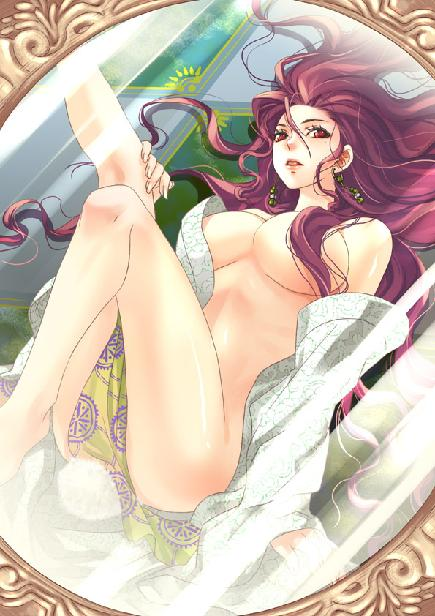
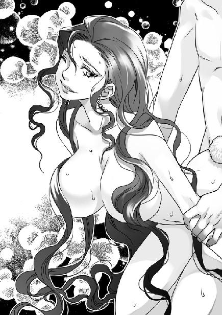
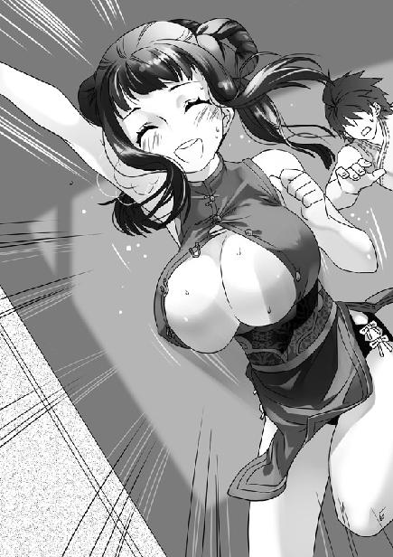

第7集·销魂别香
南荒篇（4/9）
出版日期：2010-02-12
【本集内容简介】
透过灵飞镜，程宗扬意外发现原来白夷已是鬼王峒的附庸，宴会中的云苍峰等人早被当作瓮中鳖。他紧急找来易勇向云苍峰示警，但成为了鬼王峒的目标，他们真的能从这个陷阱之中脱身吗？
除了看破鬼王峒的阴谋，程宗扬也意外发现谢艺的真实来历，以及同行的目的——寻孤。
岳武穆这位穿越前辈究竟有什么魅力，让一教之主王哲、奇能异士谢艺在他死后仍念念不忘？
※ ※ ※ ※ ※

封面人物：樨夫人

插图：樨夫人

插图：乐明珠
夜幕低垂，白夷的宫殿内灯火通明。
云母石制成的长案上摆放着莲花状的白瓷盘，里面盛放着各色瓜果。白夷人平常以素食为多，瓷盆内草莓、覆盆子、桑葚、龙眼、香瓜、橘、柚、凤梨……形形色色的果品琳琅满目。
为了照顾远来的客人，白夷人特意猎杀了一只幼鹿。此刻鹿肉已经烤得金黄，在架上用微火慢慢烧炙着。
一名侍女俯在族长耳边说了几句。白夷族长点了点头，然后对客人道：“夫人身体有恙，不能前来向客人们致意。”说着他举起酒具，“希望白夷人的酒水能表达我们诚挚的歉意，云氏的朋友和花苗的客人们，请满饮此杯。”
云苍峰与苏荔含笑举起酒盏，陪主人饮尽。
充满南荒韵味的竽声响起，白夷的乐手吹奏着古老的乐曲，为宾客和主人祈佑吉祥。客人们没有对女主人的失约表示疑惑，宾主间笑语晏晏，满座尽欢。
※ ※ ※ ※ ※
阴暗的空间内，一个美艳的妇人赤裸着丰腴白皙的肉体，四肢着地朝高处的座椅爬去，洁白的胴体泛着淫靡的肉光，肥美的屁股水光潋滟。她脸上满是妖媚的笑意，白天在众人面前时的端庄与优雅荡然无存。
石座上的鬼王峒使者傲慢地挺起身，干瘦的手指握紧扶手，下巴高高抬起，俯视着脚下一丝不挂的白夷贵妇。
“樨奴！本使的吩咐可做到了吗？”
尽管努力做出威严的样子，但使者尖细的嗓音和他畸形瘦小的身体，使这份威严就像穿上礼服的猿猴一样不伦不类。
他脚下的美妇露出讨好的媚笑，就像面对神明一样伏下身体，恭顺地说道：“遵从主人的吩咐，自从主人走后，樨奴就没有与人交合过。”
“你那个像狗一样听话的丈夫呢？”使者用嘲笑的口气说道。
“族长知道他的妻子属于鬼巫王大人所有，只能由鬼王峒的客人们使用。”
使者尖笑着打了个响指，唤来自己的武士，“把这个贱奴抬起来，让本使检查她的贞洁。”
两名鬼武士抓起地上的美妇，一手托住樨夫人的香肩，一手托她的腰臀，然后各自伸出一只手，抓住她的雪踝，将她白美的双腿朝两边拉开。
樨夫人媚笑着，洁白的肉体悬在半空，高耸的双乳微微颤动，修长的美腿笔直分开，被拉得向后反斜。大腿根部，那只丰满而成熟的性器像鲜花一样翻绽开来，露出里面湿红的腻肉。
使者抬起腿，从宽大的黑袍下伸出一只怪异的脚掌。他脚趾粗壮而发达，像丑陋的鸟爪一样弯曲着，上面覆盖着蛇鳞一样的鳞片，顶端的趾甲乌黑发亮。
望着那只丑恶的脚爪朝自己娇嫩的股间伸来，半空中的美妇神情间却看不到丝毫恐惧和厌恶，反而妖娆无比。
使者狞笑着将黑色的脚爪挤进蜜穴。美妇咬着唇角低叫一声，一丝蜜液从缝隙中滴落，红腻的穴口被脚趾挤得鼓起，白嫩的阴阜上，乌亮的阴毛随之弯翘，一缕缕散开。
美妇星眸如丝，媚声道：“樨奴卑贱的性器奉献给鬼王峒神圣的主人，天变地裂，永不背叛……主人的脚趾好粗，奴婢的贱穴都被塞满了……”
使者尖声大笑，丑陋的趾爪弯曲着深深拱进樨夫人体内，在这位白夷族长夫人湿淋淋的蜜穴中肆意搅弄起来。
畸形的脚趾，娇美的艳穴，乌黑的鳞爪，红润湿腻的蜜肉，脚爪的动作和玉户的轻颤……无不清晰如画地显示在镜面中。
※ ※ ※ ※ ※
祁远青黄的面颊微微抽搐，接着他火烧屁股一样跳起来，“快走！快走！”
“现在走得了吗？”程宗扬抛下灵飞镜，吩咐道：“先去找易彪。多余的话不用讲，要他立刻赶去白夷宫殿，无论如何把云执事和苏荔族长接回来。让吴战威去花苗人的住处，把她们都领到商铺来，免得大伙分散，被人各个击破。小魏和石刚清点人手，出门的都找回来。”
白夷族的平静使众人都放松了警觉，程宗扬最担心的就是有人溜出去玩乐。
“如果能接回云老哥，咱们立刻就走。如果白夷人不放人……去叫武二，就说苏荔这边有危险，看他爱来不来。还有，先不要声张，免得大家惊慌。”
祁远旋风一样奔出去，不多时，外面传来人马走动的喧嚷声。
程宗扬呼了口气。他只想着白夷族会屈服，却没想到白夷人已经沦为鬼王峒的奴仆。白夷人本来只想索取金钱，但花苗人贸然抛出他们的目的，使已经投靠鬼王峒的白夷人戒备起来。按照时间推算，鬼王峒的人一定是得到消息才加快了速度。他们提前一日赶到白夷族，不用说，肯定是针对自己这一行人。
身边的灵飞镜传来一声尖笑，那声音仿佛锐器刮在玻璃上般的刺耳，让程宗扬头皮一阵发麻。
地上一颗黝黑的珠子滚动着，蓦然被一只脚爪抓住。
鬼王峒的使者蜷起布满鳞片的趾爪，握住珠体摩擦着。原本昏暗的珠辉渐渐明亮起来，从他趾缝中射出浓绿的光泽。
传说中白夷人的夜明珠吗？程宗扬眯起眼睛，望着绿光荧荧的镜面。
樨夫人白光光的肉体被鬼武士搂抱着抬到座椅上方，性器正对着鬼王峒使者的视线。使者一手玩弄着美妇敞露的性器，长长的脚爪抓住珠子用力摩擦。座椅前的石制薰炉烟雾浮动，那位白夷族长的妻子目光朦胧，唇角弯翘着，露出梦幻般的笑容。
使者拔出手指，然后抬起脚爪，将那颗放射着碧光的珠子塞在美妇穴口。樨夫人大张着双腿，腰肢向上弓起，从喉咙深处发出一声呻吟。
那颗珠子经过摩擦，亮度大增，樨夫人双腿玉扇般张开，珠体绿荧荧的光泽将她雪滑晶亮的股间映得纤毫毕露。
使者头微微一摆，两名鬼武士托起樨夫人，将她放在薰炉上。烟雾弥漫着升腾而起，从樨夫人口鼻中涌入。樨夫人媚眼如丝，身体兴奋得微微战栗，仿佛沉浸在莫大的狂喜中。
使者手指一紧，从樨夫人白嫩的玉阜上扯下几缕耻毛。樨夫人下体一颤，喉中发出销魂的柔腻声音。
使者抛掉耻毛，怪笑道：“下贱的奴隶，若不是本性淫浪，怎会连这销魂别香一丝也扛不住？哈哈……”
武士纹着符咒的臂膀肌肉隆起，像摆弄一件玩具般，将白夷美妇按在使者身上。樨夫人软绵绵伏在使者的黑袍上，那具白艳的肉体仿佛失去了所有的骨骼，柔软得如同一团雪肉。
使者从脑后抓住她的秀发，樨夫人背对着使者扬起脸，眼圈泛起桃红，那张美艳而端庄的面孔柔媚得仿佛要滴下来水。她像一只雪白的玉蛙，倒趴在使者两腿间，白光光的大屁股翘在使者面前，蜜穴夹着那颗荔枝大的碧绿珠子，穴口被映得发亮，蠕动着淫态横生。
“啪！啪！啪！”
镜中清脆的肉响，让程宗扬也禁不住皱起眉头。
那名鬼王峒使者抬起手掌，狠狠抽打着美妇的雪臀，力道粗暴之极，没有丝毫怜惜。樨夫人丰满的臀肉仿佛碎裂般被打得乱颤，渐渐的，那只白嫩的大屁股膨胀起来，臀后尾椎处生出一丛白绒绒的软毛，随着使者的抽打越来越长，却是一团绒球般的兔尾。
樨夫人的肉体在使者的殴打下开始变化，臀肉越来越丰腻肥滑，原本深狭紧凑的臀沟因为臀肉的隆起而渐渐拉开变浅，深藏在臀沟底部的嫩肛一点点浮现出来。
如果说这位白夷族长的夫人最初是美艳，生出兔尾之后已经堪称妖艳。本来就丰翘的臀部愈发肥硕，衬着纤细的腰肢，仿佛一颗浑圆硕大的雪球。白腻的臀肉肥滑柔嫩，充满了诱人的弹性，被珠辉一映，散发出迷人的雪嫩光泽。
丰满的臀肉使樨夫人肥白的圆臀像熟透的浆果绽裂般朝两边分开，凹陷的臀沟完全暴露出来。在她臀沟底部，程宗扬看到一个从未见过的艳异肛洞。
樨夫人臀部丰腴圆翘，屁眼儿却小得出奇，肛洞比小指的指尖还要纤细，衬着那只白艳的大屁股，显得纤巧无比。尤为艳异的是，她的屁眼儿并不像人类那样有着丰富的菊纹，而是光滑地向内凹陷，形成一个圆圆的凹孔，嵌在光滑的臀沟内，白美雪嫩，精巧之极。
使者舌尖在唇上卷动着，垂涎三尺地盯着樨夫人香艳的雪臀，忽然尖声道：“血虎！”
镜中传来低沉的喘息声，仿佛一头野兽在喉中发出的低吼。接着，一个巨大的身影走入画面。他面孔扭曲，身体奇怪地佝偻着，宽阔的胸膛不规则地凹陷下去，身体弯曲着，两臂垂到地上，钢铁一样的躯干上布满可怕的伤痕。
使者抓住樨夫人的头发，强行将她俏脸拉起，按到那怪物腹下。那怪物弓着身体，腿间垂着一条丝瓜般硕大的阳物。
樨夫人没有挣扎，她星眸朦胧地张开红唇，含住血虎可怖的龟头殷勤地舔舐起来。
那个名叫血虎的怪物浑身伤痕累累，额头一条伤疤从头颅上部一直延伸到颔下，露出半边白森森的颅骨，只剩下一只完好的眼睛。他低吼着挺起身，巨大的阳具迅速膨胀起来。
樨夫人美艳的红唇被怒胀的阳具撑满，连呼吸也被堵住。血虎如野兽般在她嘴中挺动阳具，干得美妇面容扭曲，红唇大张着，几乎淌下泪来。
“啵”的一声，血虎拔出阳具，巨大的龟头从美妇红唇间脱出，铁锤一样昂起。樨夫人捂着喉咙咳嗽起来，半晌才望着那根手臂一样粗长的阳物，崇慕地说道：“他的阳具像神明一样伟大……”
“血虎是本使特意寻来，费尽力气才养出这条兽阳……哈哈……”使者尖笑着拍了拍美妇的艳臀，“就是要让他试试你的后庭！”
即使神智恍惚中，樨夫人也不禁花容失色，她瞪大眼睛，骇然望着那条可怕的阳具，情不自禁地打了哆嗦，哀求道：“主人，樨奴还要用后庭来服侍你，不能……不能……承受他的……”
使者眼中流露出变态的兴奋目光，抖手扔开美妇的发丝。
鬼武士把哀求的美妇拖到地上，抬起她肥嫩的美臀。樨夫人丰挺的乳球压在地上，那只光溜溜的大白屁股被扳得朝上翘起，臀后毛绒绒的雪白兔尾抖动着，红艳的蜜穴收紧，夹着那颗硕大的碧珠不住战栗。
程宗扬倒抽一口凉气。那个鬼王峒派来的使者，完全把这位白夷族长的夫人当成一件美肉玩具，玩弄之余，还特意豢养出一只怪物，让她在自己面前与怪物的巨阳表演肛交。
程宗扬禁不住又看了一眼樨夫人的屁眼儿，那只软嫩的肉孔嵌在白艳的丰臀间，小巧得用一颗花生米就能塞住，怎么可能容纳下血虎丝瓜一样的阳具？
镜中映出樨夫人惊骇欲绝的面孔，面无表情的鬼武士扒开她丰腴的臀肉。碧绿的珠光下，美妇的屁眼儿看不到微鼓的肛蕾和富于伸展的菊纹，雪洞一样光滑纤细，白生生没有丝毫杂色。
使者尖声笑道：“血虎，这只母兔子的屁眼儿又小又嫩，好好干！”
血虎弓着身跨在美妇背后，巨硕的阳物挺起，对着樨夫人的后庭娇处顶了过去。
“呃……”
樨夫人螓首昂起，纤细优雅的蛾眉颦紧，露出痛楚的表情。
血虎粗大的龟头撞在美妇白腻的臀间，阳具上血脉贲张，仿佛无数蠕动的蚯蚓。黑紫色的龟头像金属一样发亮，让程宗扬情不自禁地想起了士兵戴的钢盔。
巨阳的压迫下，樨夫人雪团一样的大白屁股被顶得向内凹陷，粉腻的臀肉围挤过来，夹住光亮的龟头。血虎不耐烦地低吼一声，两手扒开美妇的臀肉，龟头对着纤细的肉孔用力一捅。
樨夫人柔媚的美目猛然睁大，红唇发僵，鼻尖冒出冷汗。
那只丰满的雪臀仿佛一个挤扁的汽球被顶得膨胀起来，僵持片刻后，樨夫人香艳的肉体开始抽搐，肌肤颤抖着流出冰冷的汗珠。
程宗扬盯着镜面，几乎忘了手里的遥控器。任何一个正常女人，都不可能承受血虎怪物一样的阳具，何况是樨夫人那样纤小的肛洞。白夷人用欺骗的手段诱使云苍峰和苏荔赴宴，已经使程宗扬失去曾经的好感，但眼前的一幕，仍让他禁不住同情起这位族长夫人来。
血虎大吼一声，阳具失去方向，沿着臀沟从那只白腻的大屁股中滑出，打在樨夫人翘起的兔尾上。樨夫人的臀肉太过滑腻，他几次全力都滑到一边，不由焦躁起来。
使者从袖中拿出一小块黑乎乎泥膏状的物体，先掰了一半投进薰炉，然后将剩下的递给身边的鬼武士。
薰炉的烟雾变得浓郁，那武士把黑膏递到樨夫人唇边，美妇立刻张开红唇，急切地吞了下去，还不停舔着武士的手指。
吞下那块泥膏之后，樨夫人脸上露出恍惚的笑意，她目光变得湿媚，肉体也停止颤抖，软软伏在地上，柔若无骨。
“该死的母兔子！”使者狞声道：“觉得爽，就叫血虎干你的后庭！否则，你永远都别想再尝到销魂别香！”
美妇浑身抖动了一下，然后媚笑起来。不知道那一小块黑色的膏泥有什么样的魔力，樨夫人竟然主动扒开屁股，用臀沟夹住血虎那条足以令她肉体受创的阳具，小巧的屁眼儿顶在他的龟头上，用力挺动臀部，一边发出妖媚的淫声。
那团拳头大小蓬松的兔尾在臀后摇动着，让程宗扬想起兔女郎，只是少了丝质裤袜和高跟鞋。
那位白夷族长的夫人翘起屁股，仿佛骑在怪物巨大的阳具上一样，白艳艳的大屁股顶着龟头不住旋动。血虎也佝偻着身体，不断用力。美妇咬紧牙关，用尽浑身的力气向后一挺，那只柔软的大屁股蓦然一沉，坐到阳具中段。
樨夫人脸上的表情分不清是哭是笑，她蹙着眉，唇角向上弯起，睫毛剧痛般飞快地轻颤着。
使者尖笑着打了个手势。血虎露出颅骨的脸颊抽动了一下，双手抓住美妇的臀肉，向两边扒开。只见白生生的雪臀间，夹着一条手臂粗细的阳具，龟头已经消失在美妇臀内，只剩下血脉贲张的棒身，铁棒般捅在雪白的臀肉中。
血虎弓身，抓住樨夫人的头发。樨夫人精致的发髻散开，额上的珠链滑到一边，她目光迷离，肉体的痛楚仿佛渐渐消散，又露出媚态十足的笑容。
樨夫人细巧的肛洞被巨阳挤开到难以想象的大小，她直挺挺伏在地上，随着血虎的捅弄，白滑的雪臀不住膨胀着前后滑动。
“啊！啊！啊……”
白夷族长美貌的妻子淫叫着，玉体横陈。她忘了痛楚，忘了羞耻，也忘了自己的身份和尊严，仿佛一只雪白的雌兔摇摆着后臀，在主人面前，与身后凶狞的怪物激烈地表演着肛交。
又圆又翘的丰臀竭力挺动，吞吐着粗大的阳具。怪物巨大的龟头撑满了美妇的屁眼儿，每次阳具进入，富有光泽的雪腻圆臀都被挤得随之鼓起。
“程先生，出了什么事？”
易勇推门进来，他在打坐中被匆忙叫起，不知道出了什么意外，身上的道袍都来不及系，先赶来寻他的灵飞镜。当看到程宗扬手中的镜子发出光芒，他惊呼一声，险些坐倒。
程宗扬苦笑着扣起镜子，“先别看了。”
易勇喘着气道：“它真的……真的是……它是怎么……怎么……”
“冷静点，这样才好说话。”
易勇深吸缓吐，吐纳片刻，调匀呼吸，然后使劲向程宗扬施了一礼，“先生有以教我！”
“我先问你，灵飞镜能看到什么东西？”
易勇立刻答道：“只要依法施术，世间万物都可尽收镜中。”
“如果不施法呢？它会照出什么？”
易勇怔了一下，寻思道：“灵飞镜对邪灵气息最为敏感，也许会对近处的邪物作出反应。”
这话等于没说。程宗扬最想知道的是鬼王峒的使者潜藏在什么地方，但易勇的答案显然于事无补。
易勇试探道：“程先生……”
程宗扬按着镜子道：“实言相告。灵飞镜里出现的是鬼王峒的人。他们应该就在白夷族，但看不出是在什么地方。”
易勇变了脸色，“是白夷人？”
“易兄真聪明！”程宗扬赞了一声，然后道：“白夷人已经和鬼王峒勾结在一起，咱们有麻烦了。”
易勇神情一急，他刚拿到灵飞镜，还没来得及探索其中的奥秘，可不想再出什么岔子。
程宗扬安慰道：“我已经让人去通知云老哥，但易彪未必能进到宫里。易兄，你能否给云老哥传个讯？”
易勇沉吟片刻，然后盘膝坐下，闭上眼睛，手指捻成法诀。
※ ※ ※ ※ ※
白夷宫殿。正在与白夷族长交谈的云苍峰忽然停了下来，望着自己面前的酒杯。苏荔以为他醉了，不动声色地举起酒杯，“阿依苏荔敬族长一杯。”
白夷族长从容捧杯，“花苗贵客敢于行刺鬼巫王，勇气让人钦佩。但我看到你的部属并不多，这样的力量就已经足够了吗？”
“我们和红……”
“兵贵精不贵多。”云苍峰打断了苏荔的话，笑呵呵道：“只有这些人手已经足够了。”
苏荔疑惑地看了他一眼。云苍峰拿起酒杯，笑道：“我与族长干了此杯！”
说着云苍峰跄踉一步，手一松，酒杯“咣啷”跌在案上，他醉意盎然地俯身去拿杯子，“好……好酒！莫要糟蹋了。来来来，我与族长再饮几杯！”
白夷族长按住杯口，“云兄，你喝醉了。”
云苍峰陶然笑道：“这些酒如何会醉？那是十年前……不对，十五年前，我与族长放怀痛饮，彼此各尽一瓮，把臂欢笑之事，至今、至今仍历历在目……历历在目……”
白夷族长被他勾起往事，目光黯淡下来。
苏荔脚趾被云苍峰悄悄踩住，这个冰雪聪明的女子立刻起身道：“云执事醉了，不如我们先行告辞，明日再议。”
白夷族长勉强道：“云老哥既然醉了，不若就宿在此处好了。”
苏荔推辞几句，白夷族长执意不肯放人。云苍峰攀住白夷族长的手臂，“五万银铢，我已让商会运往族中，若是不够，族长尽管开口！再多的钱，云氏也付得起！凭你我的交情，只需一句话便够，连字据也不需立！”
白夷族长怔了一会儿，然后道：“我送老哥回去。”
他神情萧索，仿佛一瞬间老了十岁。
※ ※ ※ ※ ※
“山腹。”
易勇一日间两次施术，精力大量透支，脸色苍白地说道：“我能感应到，灵飞镜的灵力伸往山腹，就在白夷宫殿的下方，鬼王峒的人就在那里。”
很难想象白夷宫殿的地下还有这么大的空间，但白夷族整座山峰也许都被改造过，还有什么不可能呢？程宗扬起身道：“易兄先去歇息，等云老哥回来再商量。”
易勇不舍地看了灵飞镜一眼，神情疲倦地离开房间。
※ ※ ※ ※ ※
镜中的淫虐还在继续。白夷族长的夫人像一只妖艳的玉兔，翘着白花花的大屁股，被佝偻的怪物干得连声浪叫。巨大的兽阳在白美的臀间时出时没，每一下都尽根而入，把她柔嫩的屁眼儿干得更大。拔出时巨大的龟头将美妇小巧的肛洞带得从臀沟中隆起，充满弹性的肛肉裹住肉棒，又白又软。
“哦……呃呃……”
樨夫人翘着屁股，发出不成字句的淫叫声。
忽然她白亮的圆臀收紧，柔软的臀肉夹住那根野兽般的巨阳一阵乱颤。
血虎在她肠道内凶猛地喷射着，最后“啵”的一声，拔出阳具。
使者笑骂道：“这母兔子，真够淫的……抬过来！”
鬼武士抓起樨夫人的臂腿，举到使者面前。美妇白生生的臀间被干出一个巨大的圆洞，令程宗扬意外的是，樨夫人娇小的嫩肛居然没有绽裂，只是被干得面目全非，肛径扩大数倍，浑圆张开，露出鲜红的肠壁，无法合拢。
使者拽住美妇的兔尾，将她屁股拽得抬起，一手伸到她下体，从蜜穴中抠出那颗珠子，投到她圆张的屁眼儿中。
碧珠没入雪臀，随即大放光明，将樨夫人艳异的肛洞照得通透。
樨夫人肠道极深，刚被巨阳贯透的屁眼儿足以容纳下一只拳头。肠道内红腻的嫩肉一圈圈鼓起，微微蠕动，里面灌满了浊白的阳精。那颗夜明珠掉在肛内，半浸在污浊的精液中，放射出耀眼的光芒，将她蠕动的肠道映得纤毫毕露。那团柔软的兔尾依在肛洞边缘，细绒般的兔毛在珠辉下一丝丝发亮。
“啪、啪、啪！”
使者戏谑地将樨夫人的兔尾塞到她敞露的肛洞中，然后抽打着她的屁股，迫使她屁眼儿合拢。美妇讨好地翘着臀，媚笑着任由主人玩弄自己的肉体，脸上带着梦幻般的满足和喜悦。
程宗扬试着按了一下遥控器，镜面亮光一闪便消失了，表面恢复了灰扑扑不起眼的外观。他反复看着那面镜子，试图找出它的秘密，却没有一点线索。平整的镜面没有丝毫划痕，镜后的文字花纹也没有任何异常，更没有想象中的镙丝、卡扣和缝隙，整面镜子浑然一体，如同浇铸出来的一样。
秘密也许在“遥控器”上。程宗扬按下自己猜测中的数字键，灵飞镜完全没有反应。难道坏了？程宗扬一惊，接着他拍了下脑袋，开关还没有打开。
祁远进来，带来一个程宗扬不愿听到的消息——武二郎直接去了白夷族长那里要人。临走时撂下一句话：这些兔崽子活腻了！
二爷这一发怒，谁也拦不住。别说祁远和程宗扬，老天爷都没辙，程宗扬无可奈何地问道：“其他人呢？”
“云氏的护卫们没有一个出去的，都在商铺里。咱们这边差了一个石刚，小魏已经去寻了。”
程宗扬知道，石刚是去找阿伶了。那晚花苗的阿夕和阿伶同时被鸦人袭击，阿伶的尸体一直没有找到。石刚坚信阿伶没有死，这几天一直在山上寻找。
最坏的消息祁远放在最后，“花苗人的住处被白夷人围了起来，我们的人没能进去。”
程宗扬心里一沉，对方下手好快。
“别的呢？”
“其他就没什么了。哦，还有朱老头，他说已经到了地方，缠着要工钱。”
程宗扬本来想到了白夷族就撵朱老头滚蛋，但现在白夷族恐怕待不住了，朱老头虽然好吹牛、惹人厌，但走南荒还少不了他。
“先不给，等离开白夷族再说。其他的还有吗？”
祁远犹豫道：“没有了吧？”
程宗扬低声道：“谢艺呢？”
祁远一愣，忙乱间竟然把他给忘了。
“你有多久没见他了？”
“上午我还……”
祁远停了下来，愣了一会儿，然后倒抽了口凉气，“有两三天没见到他了——不会是被哪个兔姐儿迷住了吧？”
那个来自六朝繁华都市的文士一到白夷族就失去了踪影，不知去了何处。他在商队里一向为人低调，消失两天也没有人注意。
谢艺的真实水准虽然还是个谜，但他可能是商队里除武二郎之外最有自保能力的一个。程宗扬断然道：“不等他了！咱们收拾行李，准备走。”
祁远却没有离开，低声道：“程头儿，你猜鬼王峒的人知不知道那事儿跟咱们有关系？”
当日在熊耳铺外，追逐凝羽而来的武士被商队和花苗人联手杀死。抛开这件事，商队与鬼王峒并没有什么冲突，如果风声没有走漏，他们仍是一支普通的商队，所以祁远才这样问。
“那件事花苗人也有份。现在花苗人被他们控制住，你说咱们能不能脱了干系？”
祁远叹了口气，这下与鬼王峒的梁子算是结上了。
“那他们有多少人？”
在熊耳铺时，曾听说鬼王峒一行有上百人，如果有一半是鬼王峒的武士，他们就别想走那么轻松。不过自己有办法查看他们的实力。程宗扬打开灵飞镜，试着按下其中一个按键。
镜中出现一道长长的阶梯，两侧是陡峭的石壁。数十名奴隶正扛着巨大的圆木，在狭窄的甬道中搬行。阶梯尽头是一个空旷的圆形大厅，一根根圆木被整齐地堆积起来，摆放成金字塔状。
还未完工的金字塔内，躺着一具白色的肉体。那女子生得颇为俊俏，颈部有细细的鳞片，白皙的腹部高高隆起。一个披散着头发的巫师俯下身，用一支短匕慢慢划开她的手腕。女子吃痛地挺起身，鼓胀的乳房耸动着，沁出白稠的乳汁。
祁远惊叫道：“是她！”
“谁？”
“村长的儿媳，我见过的！黑石滩旁边那个蛇彝村！被鬼王峒灭族的。”
程宗扬想起祁远曾经说过，蛇彝人避讳与陌生人见面，通常都不见人。他路过蛇彝村时，有天清晨撞见了村长的儿媳。没想到鬼王峒的人竟然会一直把她带来这里。
镜中白影一闪，蛇彝少妇的下身蓦然卷起，却是一条雪白的蛇尾。她腹部以下与蛇躯连为一体，被细密的鳞片覆盖。巫师抓住她的蛇尾，拧转过来，用匕首钉在木上。蛇彝少妇上身平躺，腰身弯折到一侧。她臀部与人相似，中间凹陷，类似臀沟，只是同样覆盖着鳞片。她臀后鳞片越来越小，越来越细，最后消失在臀沟内。里面是排泄与生殖器合在一起的粉色肉孔。
少妇的挣扎越来越剧烈，她手臂上青色的血脉鼓胀起来，被划破的手腕鲜血淋漓。巫师拿出一点黑色的膏泥抹在她鼻孔中，少妇发出一声压抑的呻吟，紧绷的身体渐渐松懈下来。
巫师用一个瓷盒将蛇彝少妇的鲜血收集起来，用手指蘸着，在她圆滚滚的腹球上画下鬼王峒诡异的笑脸图案，然后无声地吟诵起来。
“七、八、九……”
程宗扬数着周围骨骼粗大的鬼武士。那些生着尖角的武士面目扭曲，像魔鬼一样狰狞可怖。他们看守着搬运圆木的奴隶，不时挥起皮鞭，抽在奴隶身上。
“差不多有二十名。再加上白夷人，咱们能逃出去就撞大运了。”
祁远抹了把汗水，“他们在做什么？”
“也许是一种祭祀的仪式。老四，吩咐剩下的人收拾行李，货物什么的都抛下，走得越快越好。”
祁远答应一声，奔出去安排。
程宗扬琢磨着这支“遥控器”，难道它还能像切换频道一样切换画面？望着灵飞镜眼熟的尺寸和遥控器的按键布局，他越来越肯定，当初制作出这面灵飞镜的人，有着和自己至少相似的生活经历——一个见过电视的人。
“走了？”一个尖锐的声音传来。
那些鬼武士恶魔般的目光盯着每一个奴隶，在他们背后，拱形门洞敞开着，远远能看到坐在石椅上的鬼王峒使者。
白夷族长跪在使者脚下，酒意不翼而飞，脸色变得灰白。他像一个卑微的奴仆一样，禀告道：“我已经命令族人把花苗人看管起来。天亮之前，没有人能够离开。”
在他面前，他美貌的妻子正赤裸地跪在使者腿间，高翘着丰满的白臀在使者胯间挪动。白夷族长却视而不见，目光只畏惧地望着鬼王峒使者瘦小的身体。
樨夫人绒球般的兔尾被掏出来，沾着肮脏的精液耸在臀后。那只浑圆的丰臀猛地一沉，坐到使者腹上，然后用力套弄起来，两团白光光的雪乳在胸前摇摆着，泛起香艳的肉光。
樨夫人红艳的唇角弯弯翘起，唇角还沾着浊白的黏液，笑容又骚又媚。她美目波光流转，却对自己的丈夫视若无睹，似乎他只是一个无关紧要的奴隶。
“我的主人……”白夷族长乞讨般伸出手臂，迎来的却是一声阴森的冷笑。
使者抬起手，“啪”地打了个响指。白夷族长背后佝偻的巨汉伸出手臂，扳住他的头颅。白夷族长的呼吸艰难起来，他颤抖着伸出手，仿佛想抓住薰炉中飘出的烟雾。
“废物！”使者不屑地尖声道。
“咯”的一声，白夷族长的颈骨被血虎生生拧断，头颅歪到一边。
使者抚摸着樨夫人白嫩的屁股，尖声道：“樨奴，从此以后，你就是白夷的族长了。”
樨夫人雪球般的美臀在使者胯间跳动着，没有丝毫停顿，她淫笑着用湿媚的声音道：“樨奴是主人的奴仆……”
※ ※ ※ ※ ※
门外传来一阵喧哗。云苍峰面带酒红，脚步虚浮地走到商铺门前，一手挽着送行的白夷人，絮絮说着往事。云苍峰显然在白夷族威望极高，那白夷人恭恭敬敬扶着他，没有丝毫怠慢。好不容易等他松了手，才告辞离去。
大门掩上，云苍峰脸上的醉意一扫而空，他撩起长袍，快步走进后院，玉佩在腰间晃来晃去。
易彪寸步不离地跟在旁边，忽然云苍峰停住脚步，“程小哥？”
程宗扬立在阶上，简单说道：“今晚宴会是个圈套，白夷人和鬼王峒勾结起来对付我们。还有，”他走下来，俯在云苍峰耳边，低声道：“白夷的族长刚刚死了。”
云苍峰面颊抽动了一下，“灵飞镜？是谁？”
程宗扬点了点头，没有提那面镜子，“鬼王峒的使者。因为族长没有在宴会中留下你们。”
苏荔饮了酒，两颊微显酡红，目光却明亮之极，“我的族人呢？”
吴战威道：“那边都是白夷人的守卫，我过去就被他们挡住了。”
众人都变了脸色，白夷人虽然文弱，但人数众多，远不是普通的村寨可比。如果说他们能调集上千名战士，谁也不会意外。
一个高大的身影翻墙而入，却是武二郎。他去白夷宫殿寻找苏荔，又一路追了回来，沉着脸道：“卡瓦和阿夕他们都被白夷人带到宫里去了。”
紧急关头，云苍峰反而冷静下来，沉声道：“今日之事，绝难善了。”
白夷人与鬼王峒联手，只凭他们两支商队二十余人，绝对不可能闯出去。况且花苗人已经被掳为人质，选择力拼绝对是下下策。
“怎么办？”众人都转着同一个念头。
“我们去拜访白夷族长一趟。”程宗扬扯下手臂上的绷带，被毒蝙蝠抓出的伤痕已经平复。
“程小哥？”
“我去向他们要人。”程宗扬道：“云老哥在这边主持大局，我只带几个人去。”
云苍峰皱起眉头。人手本来就不够，这时再分散，只会被对方各个击破。
“如果白夷人真要对付我们，十几个人和二十几个没什么区别。而且白夷人只包围花苗的住处，可见他们并不想与我们这些商人为敌。”程宗扬笑了笑，露出一丝杀机，“如果鬼王峒的使者肯露面，那最好不过。”
良久，云苍峰点了点头。
易彪当仁不让地站了出来，接着吴战威提上他的厚背砍刀跨到前面，狠狠啐了一口，“老吴命硬！阎王老子不肯收！”
武二郎却是一脸的不情愿，他刚和苏荔见上面，还没说上几句话就被拉去喊打喊杀，说不过去啊。但苏荔却上前道：“那些是我的族人，我去！”
武二朗立刻横起眼，斜身挡在苏荔身前，朝程宗扬叫道：“这种事能少了二爷？”
“那好，咱们五个人立刻就走。”程宗扬还记挂着凝羽。她和乐明珠都与花苗人住在一起，如果落到鬼王峒的人手里……
剩下的包括祁远在内，都取出兵刃，守住商铺的要害。云氏的商铺是用大块岩石建成，十分坚固，即使白夷人来攻，有云氏那些北府兵出身的军士在，也能支撑一段时间。
※ ※ ※ ※ ※
程宗扬还是第一次踏入白夷人的宫殿。南荒气候湿热，屋宇都尽力建得高大敞亮。殿内张挂着大量轻纱制成的帷幕，使岩石建成的宫殿显得柔和起来。
此时已是深夜，白夷人并不愿意放他们入内。最后还是武二郎出面，面上虎纹暴跳着吼了一声，那些白夷人才兔子一样蹿进去禀报。
众人在宫内等候了大半个时辰，武二郎脸色越来越不善，几次想发飙，都被苏荔拉住。
终于，帘外传来珠玉相击的轻响，一个身着盛装的美妇款款入殿。
樨夫人穿着一袭轻柔的丝袍，长发优雅地挽成高髻，露出修长的玉颈。她两手握在身前，脸上带着淡淡的微笑，从容道：“不知客人夙夜来访，有什么要紧的事情？”
“打扰夫人了。请问族长呢？”程宗扬忍住心底的焦急，不动声色地问道。
樨夫人含笑道：“族长醉了。客人有什么事，便对妾身说吧。”
“敢问夫人，”苏荔扬眉道：“为何要把我的族人囚禁起来？”
“是花苗的苏荔吧？”樨夫人微微颔首，浅笑道：“苏荔族长可能误会了。花苗人是我们白夷的贵客，怎么会囚禁呢？族长说，原来安排的住处太过简慢，是我们照顾不周，才请她们到宫里居住。”
程宗扬踏前一步，“族长真是这么说的？”
樨夫人神情自若地说道：“客人如果不信，明天可以当面去问族长。”
“问族长？”程宗扬几乎贴到樨夫人身上，低下头盯着她的眼睛，低声道：“我对地府可没什么兴趣。”
说着他笑了笑，仿佛不经意地说道：“族长的脖子还痛吗？有没有轻一点？”
樨夫人神情微变，情不自禁地后退一步。
程宗扬如影随形地紧逼过去，“我差点忘了。有血虎帮族长按摩，应该没什么大碍了吧。”
“你……”
樨夫人美目猛然瞪大。一个尖锐的物体顶在腰侧，传来令人心悸的锋锐感。
程宗扬用刀顶着樨夫人的腰身，道：“时间不早了，我也没有心情兜圈子。顺便告诉夫人，我的刀很利的。”
樨夫人脸色数变，最后才低声道：“这位公子，借一步说话。”
苏荔等人都不知内情。见程宗扬独自和樨夫人一同出去，武二郎叫道：“小子！你疯了！”
程宗扬摆了摆手，“我和夫人有几句私话要谈。”
一出帷幕，程宗扬就拉住樨夫人的手臂，将袖中的短刀顶在她腰后。樨夫人不敢挣扎，就那样僵着身子，领着程宗扬来到后面的寝宫。
樨夫人的身体香馥扑鼻，但程宗扬对这个妖淫绝情的艳妇没，有半点好感。连丈夫的暴死，也没有换取她一滴眼泪。她的情感还真廉价。
“我是该叫你族长夫人呢？还是族长呢？”
樨夫人红艳的唇角微微颤抖，嗫嚅了一下，没有回答。
寝宫空荡荡的，没有一个人影。程宗扬看了看周围，冷笑道：“一个下人都没有。不是怕被人撞破夫人的好事吧？哼，夫人打扮得好生端庄尊贵，这里的奴仆和护卫怎么也不会想到，他们的族长夫人私底下会是鬼王峒的玩物吧。”
樨夫人掩上房门，然后转过身，身体一矮，跪在程宗扬面前，浑身颤抖着泣声道：“公子……”
程宗扬盯着眼前的艳妇，大半注意力都放在身后。装可怜，然后翻脸发难的故事自己已经听得太多，他可不想成为又一个牺牲品。
“夫君曾说，能救我们夫妻的，只有云氏的朋友。”樨夫人一张俏脸哭得梨花带雨，哀戚地悲声道：“可夫君终究没有等到……”
程宗扬冷冷道：“你们是怎么和鬼王峒拉上关系的？”
“那是半年前……鬼王峒的使者从白夷路过，要求借宿。夫君不愿与那些行踪诡秘的巫师为敌，于是答应了他们的要求，把他们邀到宫中作客。”
“鬼王峒的使者很高兴，还在席间表演了幻术。然后……他们燃起一种奇怪的黑膏，妾身……妾身就身体瘫软下来……”
“他们杀死了所有的护卫和婢女，又……”樨夫人涨红了脸，“又当着夫君的面，在席间轮暴了妾身……”
“他们在族中住了半月，妾身和夫君都被他们控制，无法摆脱。此后那位使者每两个月来一次，在他们到来前，我们都会遣散所有的侍女和护卫，不让他们留在宫里。每次，他们都会把妾身召去伺候……”樨夫人羞泣道：“公子，妾身是被他们逼迫的……”
程宗扬皱眉道：“他们又不是常驻，为什么你们不想办法反抗？”
樨夫人身体颤抖了一下，“他们燃的黑膏有一种特别的香味，一闻到那种气味，就会浑身酥软。如果闻惯了，隔上几日不闻，就会坐立不安，茶饭不思，神智恍惚。整天想着只要能闻到那种香气，就什么都肯做了。”
程宗扬皱起眉头，这种东西，怎么听起来感觉很熟悉……
“鬼巫王的使者索取无度，前次勒逼我们支付五万银铢，还要我们提供一千名奴隶。”樨夫人珠泪涟涟，“求公子救救妾身，救救我们白夷族。”
白夷虽然是大族，一千名奴隶也不是小数。
“鬼王峒的使者在什么地方？”
“公子答应了？”樨夫人扬起脸，露出惊喜的目光，急忙道：“宫殿下面有条密道，可以通往他们所在的地方。”
※ ※ ※ ※ ※
武二郎低头看着黑沉沉的甬道，摸着后颈的虎斑悻悻道：“小子，小心别被人坑了。”
“你是放心不下苏荔吧？”程宗扬道：“苏荔族长可比你强多了。”
樨夫人告诉他，所有的花苗人都被送往地宫，交给了鬼王峒的使者。其他人倒还罢了，凝羽和乐明珠却让程宗扬焦急不已。得知她们刚被送去不久，程宗扬决定立刻追下去。
易彪和吴战威都没有异议，苏荔却主动留下来与樨夫人作伴。程宗扬暗赞这位花苗的女族长心细如发，有她控制住樨夫人，不怕白夷人在外面玩花样，断了他们的后路。
武二郎被强拉过来，一肚子的不乐意，一路上没给程宗扬好脸看。程宗扬也不理会，这厮就这德性，整天跟人欠他八百吊似的。不过真打起来，还是这斯靠得住，再不情愿也要拉得紧紧的。
眼前的甬道与程宗扬在灵飞镜中见过的相似。整齐而狭窄的石阶笔直通往山腹，石壁间隐隐回荡着皮鞭的呼啸声。
吴战威举着火把，俯身仔细看着阶上纷乱的足迹，然后道：“是花苗人，有十几个。”
花苗赤裸的足迹很容易分辨，但能在没有多少灰尘的岩石上分辨出来，就是他的本事了。
易彪一步跨过十几道台阶，落叶般悄无声息地落在下面。吴战威朝他挑了挑大拇指，也跟了下去。程宗扬系紧自己的运动背包，也跟着走下台阶。
甬道极长，不时响起的皮鞭声似乎就在前方，众人走了许久，却始终未看到花苗人的踪影。
就在这时，走在前面的易彪看到了一只鞋子，一只小小的绣花鞋。程宗扬认出这是乐明珠的鞋子。这丫头很羡慕花苗女子的装束，但花苗人的赤足她却学不来。
“火把！”
程宗扬接过火把，探往前方，黑暗中，出现一个巨大的空间。那是一道宽阔的悬崖，连绵的石阶变成一条长桥，一端从悬崖上伸出，另一端没入黑暗。
武二郎在桥柱上抓了一把，石屑细粉一样脱落下来，“这是什么石头？”
“水泥。”程宗扬道。
山腹里的一切：石阶、岩壁、桥梁、悬崖，都是水泥建造的。程宗扬现在完全相信，这座山峰是一座人工建筑。但自己永远不知道建造者是谁。
“飕”的一声，皮鞭撕开空气的锐响传来，接着响起一声女子的啼哭。
武二郎劈手夺过火把，像吹蜡烛一样，一口吹灭，然后身体一耸，轻烟般掠上长桥，剩下三个紧紧跟在后面。
那声啼哭一闪便消失了，四周又陷入寂静。但这寂静中，程宗扬却感到有无数眼睛窥视着自己。那些邪恶的力量游走着从四处涌来，将他们团团围住。
“停！”
程宗扬的断喝晚了一步，就在他示警的同时，一道亮光划破黑暗。
火光在台阶上投下刀切般的阴影，甬道尽头的平台上，高耸着一座圆木堆积的金字塔。包括卡瓦和阿夕在内的花苗人被捆缚在一根根直立的木柱上。在他们头顶，那个鬼王峒使者高高站立在塔顶，他双手拢在袖中，黑色的长袍长长拖在脚下，细小的眼睛闪动着恶毒的寒光。
“就你们几个吗？”使者尖细的声音道：“樨奴果然听话，把你们引诱下来……哈哈哈哈……”
使者发出夜枭般刺耳的笑声，然后手一摆，“统统杀了！”
“呼”的一声，一名鬼王峒武士握着粗糙的长刀，从台上一跃而下。吴战威举起他的厚背砍刀，死命挡住。“叮”的一声，双刀相交，吴战威双臂像触电一样抖动起来，踉跄着后退几步，险些坐倒。
易彪抢过去，挡住那名鬼武士的长刀。接着又有两名鬼武士跃下来，加入战团。鬼王峒使者身边的武士比他们在熊耳铺外遇到的更精悍，易彪与吴战威都是千锤百炼的好手，以二敌三，却没有占到半点便宜。
这些生着鬼角的武士毫不畏死，眼看吴战威被一名鬼武士逼得手忙脚乱，易彪抡刀疾攻那鬼武士的左臂，试图解救，那鬼武士却丝毫不避，任由他一刀砍掉自己的左臂，同时右手长刀挥出，在吴战威背上留下一道尺许长的伤口。
易彪横刀从失去左臂的鬼武士破绽处攻入，劈碎他的胸骨，一边叫道：“吴大哥！对不住了！”
吴战威伤口虽长，却不深，他狠啐一口，“该死毬朝上！拼了！”
程宗扬提刀上前，“啪”的一声，一只大手狠狠打在他脑后。
“你个瓜娃子！”武二郎横眉竖目地骂道：“想害死二爷啊！”
程宗扬也是火大，那艳妇声泪俱下，说得七情上脸，谁知道她背地里却包藏祸心，受了鬼王峒使者的指使，设了个圈套让自己跳。自己也是二十多岁的人了，还这么天真，竟然就上了当。
程宗扬反手一刀逼开武二郎，接着侧身出刀，足如虎踞，身如虎形，将全身的力量都集中在刀尖寸许。
“叮”的一声，鬼武士的长刀被程宗扬刀锋荡开。程宗扬刀尖一挑，切入鬼武士坚韧的皮肤中，拖出一道长长的伤口。
武二郎露出一丝讶异，显然对程宗扬这一刀大为意外。旋即他又臭起脸，气哼哼道：“这是二爷的五虎断门刀，还是三脚猫丧门刀？”
“少废话！先干掉他们你再叽歪！”
武二郎却是一脸无所谓，“拼什么命呢？打不过咱们就退回去。”
“退个屁！后面也被围住了！”
武二郎哂道：“你小子，难道耳目比二爷还灵？”
正说着，身后远远传来一丝亮光。程宗扬沉着脸道：“还用去看？用你的脚后跟想想就知道。”
武二郎立刻变了脸色。苏荔一个人在上面，如果被鬼王峒的人马袭击，那可是凶多吉少。
武二郎身影一晃，朝后蹿去。程宗扬破口骂道：“武二！你这个重色轻友的家伙！不去抓住使者，对付后面的有个屁用！”
武二郎恍若未闻，他旋风般掠到后方，一阵金铁交鸣的震响如爆豆响过，接着又掠了回来。他半身浴血，一手拿着双刀，一手握着一根折断的鬼角，然后振臂一挥，鬼角箭矢般朝木塔上飞去，直刺使者面门。
使者一动不动，旁边一个佝偻的身影昂起头，一把抓住鬼角，凶狞的目光朝台下盯来。
血虎张开牙齿，露出被锐器截断的舌根，一口咬住鬼角，将比金属还硬的鬼角一点点咬碎，吞了下去。
武二郎长臂一展，翻手挥出钢刀，砸在一名鬼武士刀背上，将他长刀砸得弯曲，然后一足踢出，蹬在鬼武士胸口，将他上身蹬得后仰，接着“砰”的一声，将鬼武士粗壮的身体踩在脚下，脚底发出骨骼碎裂的脆响。
吴战威背上中了一刀，鲜血淋漓。易彪撕开上衣，为他裹伤。跃下的鬼武士只剩下最后一名，仍面对程宗扬的刀锋毫不退让。
程宗扬的刀法虽然是武二郎亲传，但那厮的教学内容概括说就四个字：简单粗暴。
简单是武二郎的教学方法，粗暴是他的教学态度。说是传授，其实只是把招术演示一遍，至于程宗扬能领悟多少，二爷就管不着了。不是他不想管，实在是管不到。武二郎只知道这一刀该这么使，至于为什么这么使，他也说不明白。被程宗扬问急了，他就虎起脸，抬腿走人。
而程宗扬得益更多的，来自另一个人：谢艺。那文士对刀法颇为精研，往往一两句，就让程宗扬豁然开朗，在招术的变化和力量的运用方面得益良多。但他仅仅是出言指点，从来没有传授过程宗扬一招一式。
另一个是凝羽。在她身上，程宗扬第一次体会到真气运转的精微之处，知道如何将丹田气轮的力量施放出来。
鬼武士的优势只是力量奇大，悍不畏死，招术直来直去，平平无奇。程宗扬虽然心急如焚，却谨记着凝羽所说，呼吸一丝不乱，先渐渐稳住阵脚，然后一点一点占据了上风。
刚才他已经看过，木塔上被缚的花苗人中并没有凝羽，也没有乐明珠那丫头的身影。
鬼王峒使者头顶的鬼角微微晃动，忽然喝道：“血虎！”
那个佝偻的身影闻声一震，慢慢昂起头。他半边面孔被撕裂，露出白森森的骨骼，仅存的眼珠变得血红。
武二郎双刀“铛”的一撞，吸引了血虎的目光。血虎低沉地吼叫一声，凹陷的胸膛胀起，露出折断的骨骼，他拿出一根黑黝黝的铁矛，野兽般扑来。
“哥！”
易彪瞪大眼睛，望着朝武二郎飞扑而去的血虎，大叫道：“哥！”
血虎身影迟滞了一下，然后加速朝武二郎扑去，把易彪的叫声抛在脑后。
程宗扬和吴战威都瞪大眼睛，他们也认了出来，那个身体畸形的怪物果真是易虎。他凹陷的胸膛正是当初被巨石击中的部位，他被山洪卷走，在山涧中撞得遍体麟伤，头颅和四肢也为之变形。如果不是同胞兄弟易彪，任谁也认不出眼前的怪物，就是当日沉默寡言的北府兵军官易虎。
鬼王峒的使者变了下脸色，然后对旁边披发的巫师说了句什么。那巫师穿着缀满羽毛的长袍，脸色苍白，他拿出一团黑色的泥膏，放进盛满蛇彝女子鲜血的瓷盒内，然后投入火中。
白色的烟雾从火中飘出。周围面目狰狞的鬼武士神情微微耸动，眼珠愈发鲜红，仿佛能滴下血来。
血虎的铁矛在空中发出一声沉闷的风声，狂飙般扑向武二郎。武二郎双刀交叉，硬生生挡住他一矛，然后旋身出刀，用上了腰腹的力量。
同样是受鬼王峒使者驱使的武士，血虎的出手却明显不同。他铁矛犹如发怒的蛟龙，不仅力量奇大，而且招术精妙，比起那些鬼武士高出不止一筹。即使武二郎这样的猛人，一时间也被他的铁矛困住。
一丝异样的气息飘入鼻端，程宗扬手指不自觉地痉挛了一下。对面的鬼武士力量却陡然加大，他喷出浓重的鼻息，长刀犹如巨斧，重重劈在程宗扬刀锋上，将他震得手臂发麻。
“小心毒烟！”
那种黑色的泥膏程宗扬已经不是第一次见到了，他急忙屏住呼吸，双手握住刀柄，用尽全身力气疾风暴雨般朝对手攻去。
被鬼王峒使者改造过的易虎仍保留着原来的武技，再配上他恶魔般的躯体，虽然无法攻克武二郎，却将他牢牢牵制住。
忽然一柄钢刀格住血虎的铁矛，易彪额头青筋暴起，嘶声叫道：“哥！”
血虎盯着他，铁矛缓缓退了半尺，然后蓦然加速，刺向他同胞兄弟的喉咙。
易彪虎目迸出泪水，大叫道：“哥！你醒醒啊！”
“傻蛋！”武二郎一肩膀把易彪撞开，刀锋准确地劈在血虎矛尖上，破口骂道：“他这会儿又不认识你，你鬼叫个屁啊！”
说着他也闻到黑膏燃烧的气息，表情瞬间变得狰狞。
使者尖笑道：“看你们还能撑到几时！嘻嘻，这虎族汉子倒是好身板，炼制出来比血虎还强上几分……血虎！杀了他！”
血虎手中的铁矛猛然一紧，幻化出无数矛影，重重叠叠朝武二郎逼来。紧接着，高台上又跃下数名鬼王峒武士。
吴战威负伤，易彪失魂落魄，只剩下程宗扬和武二郎还在勉强支撑。程宗扬原以为有武二郎这张王牌在手，干掉鬼王峒的使者不是什么难事。谁知道改造过的血虎竟然这么强，只怕要一两个时辰才能与武二郎分出胜负。
焦急中，一抹刀光从暗处袭来，流星般刺向使者胸口。
束着腰甲的凝羽从黑暗中现身，一闪就掠到木塔上空。鬼王峒使者的笑声僵在喉中，本能地抬起手。“噗”的一声，月牙状的弯刀挑穿使者的手掌，爆出一片血花。
凝羽修长的身体在空中一折，灵巧地翻了个筋斗，顺势拔出弯刀，变招朝使者脖颈抹去，动作如行云流水，没有半分停滞。
使者握住被穿透的手掌，尖叫着滚下木塔，他身边的巫师阴恻恻抬起手掌，露出掌心一个血红的鬼面图案，然后喉中发出一声厉鬼般的尖啸，掌心的鬼面图案蓦然张开血淋淋的大口，朝凝羽腕上咬去。
凝羽回过手腕，弯刀洒下一片月光般的辉影，绕开巫师的手掌，在他颈中蜻蜓点水般一抹，带出漫天血影。
巫师的头颅仿佛失去重量般，从脖颈中飞起，旋转着飞下木塔，滚在一名花苗女子脚边。
那花苗女子脸色苍白，神情却很镇定，甚至朝凝羽微微一笑。
凝羽刀势不停，朝木柱的绳索掠去。程宗扬急道：“别动绳索！毒烟！”
微笑的花苗女子忽地变了脸色，露出鬼王峒使者般狞恶的表情，张口朝凝羽的弯刀咬去。
凝羽变招极快，程宗扬甫一开声，她便翻过手腕，用刀背在那花苗女子颈侧一击，使她昏迷过去。
“烟有毒！他们在用邪术操控！”程宗扬叫道。说着他头脑一阵晕眩，眼前金星直冒。
“笨死你了！”
一张芳香的丝帕飘过来，掩住程宗扬的口鼻，乐明珠道：“知道烟雾不对，你还说话！”
程宗扬刚挡开鬼武士一击，一手用丝帕捂住口鼻，闷声道：“你不也在说话吗？”
乐明珠得意地指了指发上的头冠，“我的朱狐冠百毒不侵！嘻嘻！”
“躲开！”程宗扬顾不得问她们两个为何会在此时出现，上前挡住袭来的鬼王峒武士。
“我来帮你。”乐明珠拔出她的短剑，抢上前去。
“砰”的一声，程宗扬结结实实摔在地上，全无提防地摔了个五体投地，接着“叮”的一声，鬼武士的长刀贴着他的耳朵砍在水泥凝成的地面上，溅起一道火花。
程宗扬脸上被石屑击中，火辣辣的一片，他还没弄明白好端端的，怎么那丫头往前靠了一步，自己就摔了一跟头。
乐明珠吓得脸都白了，急忙逼开那名武士，小声道：“对不起啊。”
程宗扬一脸的莫名其妙，“怎么回事？”
“我……我踩到你了。”
程宗扬怔了一下，才醒悟过来：那小丫头抢得太急，一下踩住他的脚背。程宗扬气不打一处来，武二郎那句话立刻到了嘴边，“你想害死我啊！”
乐明珠吐了吐舌头，“小心！”一只白美的裸足抬起，踢住鬼武士的手腕。
高台上“嗤嗤”声不住响起，那使者失了先机，野狗般手脚并用地在木塔上来回逃窜，他脚爪极其灵活，在圆木上跳跃如飞。凝羽如影随形，每一刀劈出，都从他的黑袍带出一块布料。
那些凶恶的鬼王峒武士都涌向程宗扬等人，一时无法赶回。眼看鬼王峒的使者就要被逼上绝路，忽然他尖啸一声，凝羽脚下的木塔蓦然粉碎，一条雪白的蛇尾破塔而出，重重击在凝羽腰间。
塔中的蛇彝少妇胴体上布满刀痕，颈侧的蛇鳞被人残忍地剥下，留下模糊的伤口。她硕大的腹球鼓胀欲裂，眼中的瞳孔变成竖长的形状，妖异地盯着凝羽。
凝羽腰甲绽开一条裂痕，她扶着腰，然后猛地喷出一口鲜血。
这边武二郎与血虎的搏杀形势突变。易彪刚被武二郎踢开，又不要命地扑过去抱住血虎，嘶声道：“哥！别打了！”
血虎森然转过眼睛，猛地张口朝他喉咙咬去。武二郎见势不妙，抬手把拳头塞到血虎齿间，大吼一声，铁拳被他尖利的牙齿咬得鲜血淋漓。
武二郎虎吼着倒转钢刀，刀柄重重磕在血虎脑后。血虎佝偻的身体一晃，铁矛锵然落地。
武二郎拔出拳头，手上多了两道深深的牙印，他恼火地抬起手掌，准备给易彪这傻瓜一下狠的，却看到那铁铮铮的汉子满脸泪光，哭得像一个孩子。
武二郎嚣张的气焰突然消失了，整个人变得温和下来。
“他昏过去了。没死。”
武二郎不知被勾起什么心事，眼角抽搐了几下。
“武二！”程宗扬在旁边叫道。
武二郎腾起身，大鸟般掠上高台。
那使者终于露出恐惧的眼神，也不理会呕血的凝羽，头也不回地朝高台后方的拱门窜去。余下的鬼武士像被绳索扯住一般，同时撤出战斗，跟着使者退去。后面截击他们的武士被武二郎干掉两个，剩下的也随之退往地宫深处，转眼走了个干干净净。
破碎的木塔中，临产的蛇彝少妇腹球上的鬼脸图案微微滚动，仿佛在诡异地大笑。使者一走，她浑身的精力仿佛被突然抽干，雪白的蛇尾扭动片刻，最后无力地低垂下来，腹球的蠕动渐渐停止。
木塔粉碎，那团黑膏从火中掉落出来。被捆缚的花苗人纷纷垂下头，仿佛陷入沉睡。场中除了几具尸体，就剩下程宗扬一行人。
吴战威提刀坐在地上，呼呼喘着气，背后鲜血直淌。易彪半跪着，怀中抱着恶魔般的血虎。凝羽神情委靡，武二郎和程宗扬都在喘气，只有乐明珠显得兴致勃勃。
“我们打赢了！”那丫头握着拳头兴奋地说。
※ ※ ※ ※ ※
“过那道长桥的时候——喂，你们见过那座桥没有？好长啊，而且是平的，一点都不拱——他们的火把突然灭了。凝羽姐姐拉住我，从桥上跳了下去。”
乐明珠拍着胸口道：“吓死我了。我还以为凝羽姐姐要自尽，谁知道她一手攀着桥柱，把我们两个人都藏在桥下面。那些家伙傻乎乎的，根本没发现少了两个人。我们就一直躲在下面。你们动手的时候我想上去，凝羽姐姐却不放手。”
程宗扬逗她道：“是不是吓哭了？”
乐明珠小嘴一撇，“我才不怕呢。如果是你这个胆小鬼，早吓得尿裤子了！喂，你别动……”
乐明珠叽叽喳喳地说着，手里却丝毫不停，一边给吴战威重新包扎伤口，一边给凝羽诊脉。
吴战威赤裸着上身，被一个丫头片子在背上戳戳点点，不敢动还不敢叫痛，表情要多别扭有多别扭。
程宗扬抱着凝羽，感觉她身体愈发轻盈，仿佛她所有的精力都消失了，只剩下空空的躯壳。望着凝羽失去血色的面孔，程宗扬不知道该怎么开口，最后才勉强道：“不用这么拼命……”
凝羽淡淡一笑，闭上眼，没有开口。
卡瓦首先清醒过来，帮着武二郎解下被缚的族人。受过毒烟的侵蚀，被掳的花苗人都显得神智恍惚。好在鬼王峒的使者已经逃遁，无力再来操控他们。
唯一奇怪的是阿夕。她静静看着程宗扬，目光中没有一丝波澜。
程宗扬心头怪异的感觉越来越浓重。对于自己的外貌，他还是有自知之明的，不算丑，但绝对与玉树临风、风流倜傥这些词汇无关。阿葭和阿夕先后委身于自己的情形，想起来都十分诡异，可程宗扬猜不出这种诡异来自何处。
阿夕静静看着他，忽然弓下腰，从乱纷纷的圆木间捡起一个黑色的盒子，递给程宗扬。
盒子是用精铁制成，有手掌大小。在它掉落的位置散落着几块黑色的碎布。那是鬼王峒使者被凝羽刀锋划碎的黑袍。
可以想象，它是从使者的衣袍中掉落出来。究竟是什么物品，会被鬼王峒的使者贴身收藏？
程宗扬打开盒盖，看到的是几朵干枯的蘑菇。它们的颈很粗，菌冠小小的，颜色鲜红，表面覆盖着淡黄的鳞片，手指一碰，就落下细细的粉末。
※ ※ ※ ※ ※
“这是蛤蟆菌，”祁远道：“又叫毒蝇伞，这东西只长在松树下面，毒性大得狠。”
程宗扬随手把铁盒扔在案上，“云老哥呢？”
鬼王峒的使者逃进地宫深处，他们也不敢再追。武二郎一把火烧掉木塔，几个人循着原路退回。
在寝宫外，他们看到大批白夷人。那些俊美的战士将寝宫团团围住，而他们包围中，只有一个女人。
苏荔立在寝宫前，弯刀插在她修长的玉腿旁，像武二郎一样双手抱肩，笑吟吟看着那些怯懦的白夷战士，顾盼间神采逼人。
近千名白夷战士就那样眼睁睁看着，没有一个人敢上前半步。
武二郎凶神恶煞般直闯过去，那些白夷战士仰脸看着他，没等这位爷靠近，就飞快地闪开一条大路。有一个跑得慢了点，被他眼一瞪，当场就吓软了。
程宗扬摇了摇头，白夷人既富有又怯弱，如果不是仗着地势，早就被其他强悍的南荒种族吞并了。
“那只母兔子呢？”程宗扬言辞间对樨夫人毫不客气。自己一时心软，被她阴了一道，如果不是凝羽，他们只怕一个都回不来。结果凝羽伤上加伤，吴战威也挨了一刀，想起来他就火大。
苏荔偏了偏头，眼睛却只瞧着威风凛凛的武二郎，满满的都是笑意。
这两人可真是王八瞧绿豆，看对眼了。程宗扬抱着凝羽走上台阶，看着那些害怕却不散开的白夷人，吩咐道：“易彪，请云老哥过来。”
云苍峰是白夷人的熟客，有他出面安抚，总比被这些兔子围着好。俗话说，兔子逼急了还咬人呢。万一惹急了，这几千只兔子冲上来，咬不死也烦死。
走进寝宫，只见樨夫人被捆成一团，扔在榻上，见到程宗扬，那艳妇便开始哆嗦起来。
程宗扬也不理她，随手把她拎起来，丢进一个空柜子里，然后腾开床榻，将凝羽放在上面。
凝羽神情很平静。从她受伤到现在不过六七天时间，程宗扬却感觉似乎过了很久，久到让他以为凝羽的伤会这样连绵地拖延下去。
程宗扬握住她冰凉的手指，轻声说道：“我们回去吧。”
突然间，他很想逃离南荒，离开这个诡异而神秘的地方。
“你还没有找到霓龙丝。”
霓龙丝是程宗扬随口编出来骗苏妲己的，他自己都快忘了这件事，苦笑道：“谁知道这个世界上有没有霓龙丝？”
凝羽道：“那个姓谢的文士，说在碧鲮族。”
程宗扬提起一丝兴趣，“他说的碧鲮族？是鱼人吗？”
凝羽摇了摇头，“我不知道。”
“是鱼人……”一个细微的声音说道。
程宗扬打开柜子，盯着那个怯生生的美妇，冷笑道：“夫人倒听得清楚。”
樨夫人颤抖着求道：“不要杀我……”
程宗扬压低声音道：“你最好乞求她不要有事，不然你也活不了。”说着他从帷幕上撕下一块碎布，塞在樨夫人嘴中。
不多时云苍峰带着人赶来，随即出面找来白夷族一些头面人物，进行安抚。
祁远也找到了石刚，和小魏一起匆匆赶到。他人头熟，嘴上又会来事，先分派了人手照顾伤者，又安排了住处，让神情萎顿的花苗人休息。另外从云氏商会的护卫挑了人，守住宫殿和甬道的入口，安排得井井有条。
凝羽被送到静室，由乐明珠和阿夕照料。祁远安顿停当，回来找到程宗扬。他挑起大拇指，“云老哥真是厉害，几句话下去，就镇住了场面。那些白夷人跟吃了定心丸一样，这会正筹备宴会呢。”
说着祁远提醒道：“程头儿，那蛤蟆菌可别乱碰，会出人命的。”
程宗扬用布巾擦了擦手指。几株毒蘑菇，那鬼王峒使者还巴巴地带在身上，难道南荒没有别的毒药？
祁远道：“那些白夷人还有些不安。说要见他们的族长和族长夫人，云老哥让我回来，请他们跟白夷人见一面。”
“小心。那母兔子撒起谎来眼都不眨，别让她骗了。”
“族长呢？”
“云老哥没告诉你？”程宗扬道：“被鬼王峒的人弄死了。”
祁远还不知道这事，顿时一惊。刚把白夷人安抚下来，偏偏族长又没了。
程宗扬想了想，打开柜子，把樨夫人拖出来。
“族长被鬼王峒的人杀死，你是亲眼见到的。现在鬼王峒的人被我们赶跑了，识相呢，就跟我们合作。”
樨夫人本来惊恐万状，听说合作才安下心来，连连点头。
程宗扬扯开绳索，“你的族人要见你，去和他们见个面，叫他们安心。”
祁远领着樨夫人出去。程宗扬用布巾擦了擦脸，被毒蝙蝠抓出的伤刚好就折腾了一夜，他这会儿也累了。
打了个呵欠，程宗扬神智突然恍惚了一下。宫殿岩石砌成的墙壁像被风吹拂的帷幕一样飘浮起来，拖出长长的影子。
他听到大地低沉的呼吸声，身边的空间仿佛呼吸着起伏变形。
程宗扬揉了揉眼睛，视线没有清晰，反而变得模糊。他拿起布巾，准备认真擦擦，恍惚中突然醒悟过来。
是那些蘑菇。他用手拿过那些蛤蟆菌，又用布巾擦过手，蘑菇的粉末沾在布巾上，自己又拿来擦脸，已经沾上蛤蟆菌的毒粉。
好在自己只是略微碰了碰，沾上的毒素并不多。程宗扬身体懒懒的，不想再动，心想睡一觉也就没事了……
※ ※ ※ ※ ※
身体的幻觉还在持续。耳边依稀有淅淅沥沥的雨声，远远的，如轻烟一样缥缈。朦胧中，一股馥郁的香气飘来。接着身上的薄衾被一双手轻柔地揭开，一具滑腻的肉体投入怀中。
程宗扬微微打着鼾，朦胧的脑际转过一个念头：自己真是憋得太久了，竟然做了春梦……
梦中，一张光洁的脸颊贴在自己胸口，柔软的香舌从胸前一路滑到腹下，最后樱唇一张，含住自己的阳具，殷勤地舔舐起来。她嘴唇温润之极，阳具放在里面，酥爽得仿佛要融化在她口中。柔嫩的唇瓣裹住阳具根部，吸吮着来回吞吐，舌尖从龟头到棒身，无微不至地卷动着，传来令人心跳的软腻。
良久，梦中的女子吐出勃起的阳具，然后那具香滑的肉体依偎过来。那女子翘起粉嫩无比的美臀，用柔软的臀肉夹住怒胀的龟头，轻轻摩擦着。
那只屁股又滑又嫩，香气袭人。火热的阳具在肥美的臀肉间滑动着，龟头忽然一软，触到一团软腻的美肉。丰盈柔嫩的美肉油脂般滑开，露出湿腻的穴口。
那只丰腻的雪臀微微一沉，龟头顶进穴口，滑入销魂的腻洞中。
那具芳香的肉体柔软地依在怀中，丰腻而光滑的雪臀耸动着，用蜜穴套弄自己的阳具。
程宗扬睁开眼，看着怀中香软的美妇，发出一声冷笑。
光线穿过层层叠叠的帷幕，变得黯淡下来。樨夫人侧着身偎依在榻上，白嫩的美臀朝后挺起，柔柔耸动着，正在殷勤服侍他的阳具。听到程宗扬的冷笑，她玉体一颤，然后转过头，讨好地露出笑脸，眼中却透出一丝怯意。
樨夫人三十余岁年纪，比程宗扬大了不少，但美艳的面孔上那种怯生生的娇态，我见犹怜。
程宗扬揉了揉太阳穴，脑中还有一丝毒菌带来的眩晕感。外面的雨声渐渐清晰，饱含水汽的微风拂起帷幕，带来潮湿的气息。
“谁让你来的？”
他阳具还停留在樨夫人体内，被温润的蜜腔包裹着，但森冷的口气却让樨夫人打了个寒噤。她怯生生说道：“妾身见公子一人独宿，无人侍寝，才自荐枕席……”说着羞涩地垂下头。
说这番话的时候，樨夫人侧身依在程宗扬怀中，那只雪团般的美臀光溜溜贴在程宗扬腹下，就像一只雪白而又柔顺的玉兔。
程宗扬双手一撑，抬起身靠在床头，然后一手托起她的下巴，冷冷看着。樨夫人满面窘态，目光羞怯得不敢与他接触。她赤条条脱得一丝不挂，两团圆润的乳房压在程宗扬腿上，充满了诱人的弹性。
如果凝羽有个三长两短，程宗扬一刀干掉这个淫妇的心都有。不过他不是有洁癖的人。既然她主动投怀送抱，拿她当娼妓玩玩也没什么大不了的。
程宗扬冷笑一声，一把抓住樨夫人丰腻的臀肉，将她拖到自己身上。樨夫人白生生的胴体伏在程宗扬腿上，白美的双腿分开，骑在他腰间，那只充满肉感的大圆屁股白光光翘在程宗扬面前。
程宗扬毫不客气地分开樨夫人的大腿，露出她腿根处刚交媾过的蜜穴，粗鲁地朝两边剥开。虽然在灵飞镜中见过这美妇的性器，毕竟不及在眼前清晰。樨夫人成熟的性器被扒得敞开，宛如一朵鲜花在雪白的股间绽放。她阴唇柔嫩之极，阴中红嫩的蜜肉沾着透明的淫汁，仿佛融化的蜡汁般娇艳欲滴。
程宗扬放开手，然后抓住她白滑的臀肉，将她臀沟扒得敞开，露出秘藏的嫩肛。
“呀……”
樨夫人低低地惊叫一声，玉颊红晕过耳，她害羞地扭动了一下腰肢，一手伸往臀后，想掩住羞处。
程宗扬被她狠摆一道，一肚子的火气还没发泄出来，眼见她羞怯作态，只冷眼旁观。等她雪白的手掌伸到臀后，才一把抓住她的皓腕，将她手臂拧到背后。
“哎呀……”
艳妇上身伏在程宗扬腿上，玉腿挣动着，吃痛地拧紧眉头。
程宗扬一手拧住她的手腕，一手扬起，“啪”的一声，重重打在樨夫人臀上，将她白光光的屁股打得乱颤。
“装什么装？还脸红——很害羞吗？跟妖怪干的时候怎么不装呢？自己送上门来的婊子，还装贵妇！以为我很好骗？”
樨夫人香艳的大白屁股被程宗扬打得发红，她却眉开眼笑。美妇收起脸上的羞怯，整个人变得骚媚起来，腻声道：“公子休怒，公子要妾身做什么，妾身就做什么……”
“少废话，你不是兔子吗？尾巴呢？”
艳妇吃吃娇笑着，风情万种地翘起屁股，臀后生出一团雪白的兔尾，绒球般洁白可爱。她一手被程宗扬拧住，便把另一只手伸到臀后，拨弄着兔尾，臀间那雪玉般的肉孔微微抽动着缩紧，淫态妖媚入骨。
程宗扬嘲笑道：“我还以为血虎那么大的家伙会把你干到肛裂呢，竟然还这么紧。这屁眼儿怎么长的？”
樨夫人骚媚地摇着屁股，“妾身是白夷人，后庭别有妙处，公子试试就知道了……”
樨夫人的嫩肛白生生光滑无比，仿佛在牛乳中洗过般白嫩干净。被她骗进鬼王峒使者的圈套中后，程宗扬对她仅有的怜悯都化为乌有。
他抬起手指，插到美妇艳异的肛中。那肉孔一滑，吞下他半截手指。绵软的美肉包裹着指节，滑软得不似屁眼儿。
程宗扬抬手打在樨夫人臀上，“还在装？”
樨夫人手腕被他松开，连忙两手抱着臀肉，将雪白的大屁股掰得敞开，露出臀沟间小巧的肉孔，“公子再进得深些就是了。”
程宗扬手指再次插入肛洞。滑嫩的肉洞尽头有一团充满弹性的软肉，指尖用力，那团软肉柔腻地扩开，紧紧含住他的手指，里面一片火热。
樨夫人妖艳的大白屁股翘在半空，光滑的屁眼儿夹住程宗扬的手指，微微抽动。在她肛中，那团软肉仿佛一张灵巧的小嘴，在程宗扬的指头上来回舔舐。她肛肉不仅细嫩，而且分泌出一层油脂般的液体，滑而不湿。虽然不像蜜穴那样水汪汪的湿腻，却别有一番韵致。
樨夫人翘起雪臀，秘藏的内肛向外鼓起，吞没程宗扬大半手指。肛内一圈圈腻肉缠在指上，然后收紧，一点一点向外吐出。她肛内温度比体表高出许多，手指插在里面，微微发烫，每一丝肛肉的滑动都清晰无比。
“这是……”
樨夫人惊讶地睁大美目，看着那个奇薄无比的胶膜，透明的膜体长长的，有着水果的味道，表面的根部布满了颗粒……
程宗扬将安全套戴在阳具上，然后挺起身。眼前这艳妇看似端庄，其实不知道和多少人滥交过，性交对象中还有半人半妖的怪物。如果自己没有记错，肛交危险系数比其他性交方式高一百倍。既然准备搞她的屁眼儿，最好还是小心一点——幸好自己带有安全套。
虽然不知道这个世界里有没有那些乱七八糟的病，但总是小心为上。万一染上了——他敢肯定这个世界没有抗生素。
樨夫人识趣地不再询问，转而说道：“公子的阳物好大……”
一直以来程宗扬都有种感觉，自己的阳具似乎变大了，但戴上安全套的那一刻，他发现那完全是错觉。安全套的尺寸大小完全合适，就和从前一样，这让程宗扬有些遗憾。
樨夫人骚媚地瞟了程宗扬一眼，然后扶起他的阳具，抬起屁股，将龟头对准自己的肛洞，腰肢扭动着朝下坐去。
被安全套绷紧的龟头滑入肛洞，顶住那团软肉。樨夫人跪伏在程宗扬腰间，柔软的屁眼儿裹住龟头，浑圆的雪臀向下一沉，喉中发出一声浪叫。
阳具整根没入艳妇臀间，安全套上的颗粒挤在白嫩的肉孔中，将柔嫩的屁眼儿撑得变形。樨夫人背对着程宗扬，赤裸着香喷喷的娇躯卖力地耸动圆臀，用屁眼儿套弄着他的阳具。那团白绒绒的兔尾在臀后颤巍巍抖动着，不时摩擦着程宗扬的腹部。
“鬼王峒在什么地方？”
“鬼王峒在盘江的南边……妾身也未曾去过……”樨夫人一边吃力地耸动屁股，一边断断续续说道。
“他们怎么会挑你做族长？”
樨夫人的媚笑有些发僵，使者与她说那番话时，周围只有那些被割掉舌头的鬼王峒武士，可这个年轻人却似乎知道一切。
她不敢再隐瞒什么，“使者说：鬼王峒只需要最听话的傀儡……他们说妾身比族长听话……调教好了，好去觐见巫王……”
“你见过他们的信使吗？像乌鸦一样的？”
“乌鸦？”樨夫人显然不知道黑魔海的黑鸦使者。
程宗扬转回话题，“他们是怎么调教你的？”
“使者说，鬼巫王喜欢各种不同的女人，每次做的时候会把女人身上每个洞都塞满……”樨夫人笑吟吟说着，眉眼间没有半分羞态，神情又骚又媚，“而且一干就是很久……还要会各种姿势……”
“每个洞都塞满？”
程宗扬脑中跳出一个浑身长满触手的怪物，难道鬼巫王是触手系的妖怪？
樨夫人妖媚地一笑，扬手从床头的烛台上取下蜡烛，“像这样……”
她微微挺起下体，一手剥开玉户，将蜡烛塞入半截，然后握住程宗扬的手覆在上面，轻轻一推。
“啊……”
樨夫人骑在程宗扬腹上，一手扶案，上身向后仰去，胸前两粒丰挺的乳球一阵摇晃。
“啪”的一声，那个铁盒从案上掉落，几株蛤蟆菌滚了出来，樨夫人摇曳的肉体停顿下来。
“你见过这些蘑菇？”
樨夫人点了点头。她说：白夷人称这种蘑菇叫毒蝇伞。它只生长在松树下，数量稀少。鬼王峒的使者曾要求白夷人到山中采集，但总共也没采到几株。
说这番话时，樨夫人一直在套弄程宗扬的阳具。鬼王峒的使者花样不少，这美妇也足够卖力，使出浑身解数来讨好程宗扬。她丈夫已死，现在鬼王峒的靠山逃得无影无踪，又与商队的人结下怨仇。樨夫人很明白，事实上从他们占据宫殿的那一刻起，自己已经成为他们的俘虏。
南荒部族对仇人从来都不讲究宽容，胜者为王，败者为奴，是南荒通行的法则。樨夫人在鬼王峒使者手中受尽淫辱，曾经的矜持与尊严早已沦落殆尽。为了保住性命，她不惜主动委身求欢，只希望能讨好这个年轻人，平息他的怒火。
雨声越来越大，天地都仿佛被无边的雨水淹没。帷幕间，一具雪白的肉体伏在地上，像只妖艳的大白兔般高高翘着屁股，摇晃臀后的兔尾。
在她身后，程宗扬挺起阳具，用力干着她的屁眼儿，呼吸声越来越粗重。
“啊、啊、啊……”
身下的美妇发出淫浪的叫声，在雨声中愈发湿媚。程宗扬明知道她是装的，也不禁兴致勃发，阳具勃起如铁。
樨夫人的屁眼儿纤小白净，光滑柔嫩，看上去像艺术品一样精致，让人不忍用力。但见识过樨夫人与血虎的肛交，程宗扬知道她的肛洞看似柔嫩，其实弹性十足，于是抛开所有顾忌，抱着她白美的雪臀，毫不怜惜地大力挺动，将樨夫人干得花枝乱颤。
透明的乳胶薄膜仿佛与肉棒融为一体，根部突起的颗粒在美妇肛中充满力道地进出着，将柔嫩的屁眼儿干得发红。樨夫人媚声不绝，丰腻的大白屁股仿佛牛奶制成的果冻，在程宗扬的撞击下不住震颤，晃动出白花花的肉光。
※ ※ ※ ※ ※
祁远青黄的脸颊上透出红红的酒意，“刚才在席间，云老哥已经和白夷人把事情都说清楚了。两边的冲突都是鬼王峒的人在里面捣鬼，还杀死了族长。现在为着谁来当族长，白夷人正争得厉害。”
程宗扬靠在榻上，唇角带着一丝若有若无的笑意，“争的人多吗？”
“多得很。原来的族长没有子女，位置空着。本来樨夫人接任大家都没话说，可樨夫人这会儿不知去了哪儿。”祁远愁眉苦脸地说道：“这事儿本来跟咱们没关系，谁让咱们撞上了呢？云老哥也发愁呢。”
程宗扬气定神闲地说道：“愁什么？樨夫人已经答应了当白夷的族长。并且说，只要商路不断，所有的珠宝玉石，都按半价卖给咱们。”
樨夫人离开时，腿软得扶着墙才能起身，但神情却充满喜悦。程宗扬在她身上用掉了两个安全套，而她也得到了她想要的东西——她保住了性命，同时接替死去的丈夫，成为白夷族的族长。
作为交换，樨夫人承诺白夷族的商路只对云氏和白湖商馆开放，并且同意将所有的金玉珠宝都以半价出售。
祁远听到这个消息乐得合不拢嘴。白夷的湖珠在内陆销路极佳，能够垄断商路，等于是捡了个能下金蛋的母鸡。
“吴大刀背上的伤还好，没伤到筋骨。姓乐的丫头说，休养两天就好。”祁远说了目下的情形，然后道：“云老哥想跟你商量一下，什么时候走。”
“鬼王峒的人呢？”
“易彪在洞口守着。一直没动静。”
正说着，隔壁传来一声野兽般的低吼，接着“铮”的一声，岩石砌成的墙壁仿佛也摇撼起来。
祁远笑容有些发苦，低声道：“那家伙怎么办？”
他说的是易虎。那个沉默寡言的汉子现在变成了一具行尸走肉。恢复了行动能力之后，他开始攻击他所见到的任何生物，甚至包括他的同胞兄弟易彪。众人不得不用铁链锁住他，把他囚禁在石屋中。
每个人都清楚，易虎其实已经死了。现在的他只是一具尸体。但看到易彪的样子，没有一个人忍心提出唯一的解决方法。
武二郎更干脆，“已经死过的人还准备让他再死一次？”不等易彪开口，他就拔出刀往地上一砍，叫道：“谁敢这么缺德，小心二爷弄死他！”
于是大家都闭嘴了。
谁也没想到武二郎会替易彪出头，不过想到他的杀兄之仇，程宗扬便明白过来。这厮虽然粗，但并不讨厌。可杀又杀不得，带他走更不可能，怎么处置血虎，程宗扬也觉得头痛。
“真不行，就留在白夷人这里。”程宗扬道：“易彪想见他，每年跟着商队来一趟就行。”
这等于是让一群兔子养一只老虎。不过这事就该白夷人头痛去了。
“我怕的是那些家伙。”祁远道：“鬼王峒那些人还在下面。咱们走了，易虎怎么办？”
如果不是凝羽袭击那名使者，鬼王峒数十名武士足以把他们屠杀殆尽。现在他们退到地宫深处，以商队的实力，能守住洞口就不错了。
“云老哥的意思，咱们能不能用石头把洞口封住，不让他们出来？”
这是个可行的办法，可谁也不知道下面还有没有别的出口。如果被他们逃出去，不仅他们，连白夷族也要面临着灭顶之灾。
“鬼王峒那些人在什么地方躲着，”祁远道：“程头儿，你那个东西不是能看到吗？”
程宗扬一拍脑袋。被樨夫人缠着，竟然忘了这件事。
灵飞镜灰色的镜面闪动了一下，然后暗了下去，仿佛在一个黑暗的洞穴中。
一只干枯的手掌张开，指缝中透出碧绿的荧光。
鬼王峒的使者伸出鼻子，像狐狸一样左右嗅着，许久才露出安心的表情。后面的武士举起火把，火光映出甬道灰沉沉的石壁和地上一连串的水洼，接着是一个模糊的身影。
那个身影缓步走来，像从雾中出现一样变得渐渐清晰。他头戴方巾，穿着文士的青袍，腰间悬着一柄普通的钢刀，目光平静而又安详。
“她在哪里？”谢艺淡淡问道。
使者眼珠飞快地转动着，“谁？”
“碧宛，在哪里？”
“你是谁！”
谢艺慢慢踏过水洼，“她在哪里？”
使者本能地向后退去，忽然尖声叫道：“你不是白夷人！是随商队来的外乡人！去死吧！”
两名武士从使者身畔挤过，带着风声朝谢艺扑去。
谢艺迈步跨过水洼，然后抬起脚，一脚踏在一名武士膝盖内侧。那武士身形比他大了一倍，浑身刺满黑色的符文，就像一头狂奔的野牛。然而被他一踢，武士强壮的躯体仿佛被一柄锋利的钢刀扫中，膝盖定在原处，上身猛地弯折下来。
“嗒”的一声，谢艺腰间的钢刀跳出半截。他左手握住刀鞘，翻过钢刀。他动作从容，时机把握得不差分毫，武士庞大的身体如山般压下，仿佛主动扑在寒光凛冽的刀锋上。
刀锋切穿了鬼武士的喉咙，鲜血飞溅而出。另一名武士张大口，无声地咆哮着冲来。谢艺眼睛盯着使者，看也不看那名武士。他右手握住刀柄，拔刀递出，像用一柄短剑一样送入那名武士胸膛，侧腕一拧，然后拔出。
钢刀准确地穿透了武士的心脏，他锐利的鬼角在岩壁上划出一道长痕，身体轰然倒地。
顷刻间搏杀了两名强悍的武士，谢艺神情依然从容不迫。
“她在哪里？”他淡淡问道。
“杀了他！杀了他！”
使者发狂一样叫着，身后的武士蜂拥而出。
谢艺目光缓缓亮起，他微微俯身，持刀的右手稳若磐石，然后猱身向前，旋风般闯入人群。
祁远面孔僵硬地盯着镜面，程宗扬手心里也满是冷汗。他从来没想到一个人能有这样强悍的身手。面对蜂拥而来的鬼武士，谢艺丝毫没有退让，钢刀以强攻强，以快对快。他的刀法就像他手中经过千锤百炼的钢刀一样，没有任何花巧，但每一刀劈出，都将钢刀的威力施展到最大。
谢艺的刀法并不刁钻，但总能找到敌人最薄弱的一处，雷霆般击出，每一刀击出，都有一名武士溅血倒地。
挡在甬道中的武士越来越少，使者的眼神也越来越恐惧。忽然他尖叫一声，钻进身后的奴隶人群中，疯狂往后逃走。
“叮”的一声，使者飞速起落的脚爪忽然一顿，被一柄钢刀穿透脚背，牢牢钉在地上。
谢艺静静看着他，身上的青衫犹如雨过天晴，没有半点血迹。在他身后，所有的武士和奴隶都被斩杀殆尽。鲜血流淌在一起，染红了甬道里的水洼。
使者嘶嚎着，头颅忽然一变，眼鼻向后缩去，嘴吻霍然伸长，张开一条鳄鱼般的长嘴朝谢艺颈中咬去。
谢艺握掌成拳，一拳轰在使者颔下，将使者生满獠牙的长嘴打得朝天仰去。
使者尖利的牙齿在嘴中碰撞着，发出令人齿酸的“咯咯”声。
使者喘息着，齿间流出暗红的鲜血。
“可憎的外乡人！”使者嚎叫道：“伟大的巫王会为我们复仇的！”
谢艺从他脚背上拔起刀，然后手腕一翻，斜刀砍断使者的小腿。
“被诅咒的外乡人！”使者身体一歪，惨号着跪下来。
使者尖嚎声忽然一滞，被那柄钢刀塞住嘴巴，口中充满了鲜血的腥甜和金属冰凉而辛辣的味道。
谢艺翻过钢刀，用刀背敲下使者一整排已经摇动的牙齿，然后道：“她在哪里？”
使者浑身发抖，他失去了一条腿，口中破碎的牙齿混着鲜血流淌出来。
“你不会感到痛。至少现在不会。”
谢艺拿出一枚铜铢，拍在使者脖颈后。使者浑身震颤了一下，铜铢嵌入椎缝，身体仿佛浸泡在温热的水中，失去了疼痛的知觉。
“她在哪里？”
谢艺一边问，一边拿起使者的手掌，抬起他的食指，像削水果一样，削去他指上的皮肉。他的动作很专心也很细致，就像镂刻一件艺术品那样用心精细。
寂静中，只有刀锋剔过骨骼的“沙沙”声。使者瞪大眼睛，看着自己的手指在刀锋下被削出白森森的骨骼。忽然他疯狂地嚎叫起来，“我不知道！我不知道！”
“她在哪里？”
谢艺放下使者已经成为白骨的食指，然后抬起他的中指，再次削下。
“没有这个名字！”使者鳄鱼般的长吻淌出血沫，眼角瞪得几乎裂开，狂叫道：“我没有听过这个名字！没有！从来没有！”
“或者你会记起来。”谢艺平静地说道：“她是碧鲮族人。很久以前离开了南荒，大概十五年前又回来了。带着她的女儿。”
“是碧奴！”使者嘶声道：“碧鲮族的碧奴！她死了！”
谢艺眼角跳了一下，“怎么死的？”
“她是巫王的姬侍！几年前病死的！”
“她的女儿呢？”
“我不知道！我不知道她还有个女儿！”
谢艺停下来，“她的尸骨在哪里？”
“没有！没有尸骨！”
谢艺不再询问，他提起刀，一刀斩断使者的脖颈。
那枚铜铢跳了出来。谢艺接过铜铢，小心地擦拭一下，放在干瘪的钱袋里，然后离开。一颗夜明珠从使者无头的尸身掉出，转动着滚到谢艺脚边，那个男子却看也不看。
程宗扬浑身都被冷汗湿透。他与同样面无人色的祁远对视一眼，低声说道：“你不是说他在军队里待过吗？那家伙待的不会是军法处吧？这样直接的刑讯手段，怎么可能是一名军士？”
目睹了镜中的一幕，祁远喝的那点酒已经全变成冷汗流了出来，他艰难地擦着颈子，小声道：“他这是杀星下凡……亲娘咧……”说着打了个寒噤。
程宗扬呼了口气，“幸好他不是敌人。”
谢艺对自己的来历讳莫如深，众人都猜想谢艺的身份不是落魄文士那么简单，这会儿见识了他的手段，两人都不禁心生寒意。谁也不知道他怎么进入地宫，寻到鬼王峒的使者。好在他和鬼王峒是敌非友，否则有这样一个敌人，未免太可怕了。
无论谢艺的目的是什么，至少他与鬼巫王为敌。敌人的敌人就是朋友——希望这一法则在南荒还适用。
沉默了一会儿，程宗扬道：“朱老头的口气你倒学得挺像，那老家伙呢？”
祁远咧了咧嘴，“朱老头在宴席上啃了条鹿腿，肉没烤熟，又闹肚子了。”
程宗扬收起灵飞镜，“刚才看到的，除了云老哥，跟谁都别说。”
祁远点了点头，忍不住道：“他找的那个女人是谁？”
“谁知道呢。”程宗扬呼了口气，“希望那位鬼巫王运气够好，不要让他逮到。”
雨仍在下着，只是从急雨变成了蒙蒙细雨。被雨水冲刷过的岩石莹白如玉，一洼一洼积着浅浅的水。程宗扬走出寝宫，吸了一口山间清新的空气，用力舒展了一下肢体，一身轻松地走入雨幕。
鬼王峒一行人葬身地宫，使他们少了一个最危险的敌人，一直压在心头的危迫感像一块大石落了地，程宗扬心情顿时轻松许多。
“已经起来了？”
凝羽破碎的腰甲已经去掉，穿着便装，在窗前用丝帕抹拭着她的弯刀。听到程宗扬的声音，她抬起头，绽开一个微显僵硬的笑容。
程宗扬按了按她唇角的笑纹，小声道：“你该多笑一点。整天冷着脸，容易变老。好些了吗？”
“不知道乐姑娘给我用了什么药，”凝羽道：“伤势已经痊愈了。”
程宗扬一怔，“是吗？”
“哪有啊！”乐明珠跳出来，她嘴里还咬着鱼干，含含糊糊道：“我只是给凝姐姐服了些丹药，让她不再吐血，离痊愈还远着呢。喂，那些坏蛋呢？”
“不用担心，祁远已经带人去封洞口了，连只耗子都出不来。”
“啊！”乐明珠惊叫道：“把洞口封住，下面的人不就全死了吗？”
“怎么？你还想留活口？”
乐明珠顿足道：“下面还有好多奴隶！”
程宗扬迟疑了一下，“那也是鬼王峒的奴隶。”
“可他们是无辜的！不行！不能封住洞口！”
“那怎么办？我们在洞口守吗？”
“对啊，在洞口守着。他们饿得受不了就会出来，到时我们就把那些坏蛋一个一个逮住杀掉，救出那些奴隶。”
程宗扬说服不了这个充满正义感的小丫头，又不能告诉她地宫里已经没有活人。
“等他们出来很难吧。”凝羽在旁边平静地说道：“如果他们吃奴隶，还能支撑很久。”
乐明珠吓了一跳，连嘴里的鱼干也忘了咽。
程宗扬岔开话题，“正好我有事找你。”他取出使者遗落的铁盒，“你能不能查出来它的毒性？”
乐明珠被那个吃人的话题说得倒了胃口，苦着脸吐掉鱼干，接过铁盒。
程宗扬拉起凝羽，“你该多跟人接触些。云老哥在前面宴请白夷人，我们一起去。”
※ ※ ※ ※ ※
“宗扬，”云苍峰笑呵呵拉住程宗扬的手，说道：“过来，见过白夷族的新族长！”
樨夫人换了一袭素服，眼睛哭得红红的，一脸哀戚。她敛衣向程宗扬施礼，“亡夫不幸身故，若非诸位援手，我白夷族……”
程宗扬暗赞这女人变脸比翻书还快，若不是知道她的底细，准教她瞒过了，以为她与丈夫情深意重。
程宗扬似笑非笑地说道：“恭喜夫人接任族长。咦？”他抽了抽鼻子，疑惑地说道：“哪里有股怪味？”
樨夫人哀戚的面孔微微发红，连忙垂下颈子掩饰。程宗扬拉着凝羽在席间坐下，给她剥了颗橘子，一边道：“我记得橘子九、十月间才成熟，没想到现在就已经有了。”
樨夫人柔声道：“南荒瓜果四时皆有……这柑桔请客人慢用。”
程宗扬手肘不经意地一抬，撞在樨夫人高耸的乳峰上。樨夫人花容失色，露出痛楚的表情。
程宗扬若无其事地把橘子递给凝羽，“你不饮酒，吃点水果。”
凝羽接过橘子，目光在人群中游移。席间大多是白夷人，云苍峰和苏荔坐在客席作陪，祁远则混在人群中，说起白夷的湖珠赞不绝口，引得那些白夷人喜不自禁，纷纷取出佩戴的湖珠让他鉴赏。
云苍峰笑道：“这祁远好口才，连白夷人都对他一见如故。”
程宗扬道：“白夷的商路有几成利润？”
云苍峰比了个手势。
程宗扬吓了一跳，“这么多！”
“六朝风气奢靡。去年天子为太后祝寿，一次便搜购珍珠百斛，市面上的湖珠都被搜罗一空。”
“既然利润这么高，为什么没有别的商家走这条商路呢？”
云苍峰笑道：“南荒岂是好走的？况且，”他俯过身，低声道：“白夷人生性多疑，若非熟客，连山谷也未必能进来。”
说话间，程宗扬看到一个熟悉的身影。
朱老头蹲在角落里，身边放着七八只碟子，正吃得不亦乐乎。
“老头儿，你不是闹肚子吗？”
朱老头拿袖子一抹嘴，乐呵呵道：“闹肚子也不能耽误了吃啊。哎，我说小程子，欠我的钱啥时候给啊？我都一把年纪、半截身子入土的人了，你可不能诳我老人家。”
程宗扬挨着他坐下来，拿起一颗水果在手上转着，随口道：“你们那个殇振羽，在南荒是做什么的？”
朱老头打了个突，连忙朝四周看了看，见没人注意才压低声音道：“可别乱讲！老爷子的事少打听。”
程宗扬哂道：“瞧把你吓的。他比鬼巫王还厉害？”
“鬼巫王那孙子？”朱老头一脸的不屑，“你看我老人家啥时候怕过他？我老人家想弄死他比捏死一只蚂蚁还容易。”
“你就吹吧。到了见真章的时候，就你溜得快。喂，朱老头，再领我们走一段？”
“不成不成。”朱老头脑袋摇得跟波浪鼓似的，“说好了就到白夷，我老人家还赶着回去呢。要不，让小桂子和小桧子带你们去。”
想起吴三桂和秦桧，程宗扬就有些郁闷。说他们是假的吧，那模样还真有点靠谱，说他们就是自己知道的历史人物吧，一个权奸，一个乱世枭将，怎么会被一个逃到南荒的巫师搜罗到一处？
朱老头啃着果核，含含糊糊道：“我听小刚子说，你们前两天在山顶撞见个长翅膀的鸟人？哪儿来的？”
“黑魔海送信的。”
“黑魔海？”朱老头“嘿嘿”笑了起来，“骗谁呢。”
程宗扬眯起眼，“你知道黑魔海？”
“说来话长了，黑魔海现在提的人不多，十几年前，可威风了。那些家伙擅长什么采阴补阳、开鼎炼丹、使毒作法，跟乐丫头的光明观堂没少别苗头。别着别着，惹到六朝那个什么岳帅，好家伙，带了一帮人到黑魔海，从掌门的到看门的，齐根刨了个干净。哪儿还有什么信使？噗！”
朱老头吐了果核，两手在衣服上抹了抹，然后摊开手，涎着脸道：“说了这么多，怎么也值几个银铢吧？”
“不提钱你会死啊？”程宗扬拍拍屁股，转身就走。
“别急别急，”朱老头连忙拉住他，“信呢？”
程宗扬回过头，讶道：“朱老头，你可别告诉我你识字。”
“这你就不知道了吧？我老人家可是上过学的。要不是落在南荒这鬼地方，秀才我老人家都考中十七八个了。”
程宗扬心里一动，从背包中拿出锦囊，取出里面的素纸，递给朱老头。
朱老头接到手里，翻过来覆过去看了几遍，“原来说的是这个啊。”
“是哪个？”程宗扬含笑道：“大爷，你给我讲讲？”
朱老头指点着那张王哲留给程宗扬的无字信笺，老气横秋地说道：“这上面不都写着吗？你瞧，这个，还有这个……”
程宗扬没好气地说道：“那是纸上的线格！你给我找出一个字我瞧瞧！”
朱老头随手把信纸揉成一团，丢到程宗扬手里，“不看了，不看了。还是说说钱的事儿，小程子……”
“一句话，”程宗扬打断他，“走一趟碧鲮族，按现在的价码，到地方全部给你结清。要不咱们就一拍两散。我去我们的碧鲮族，你回你的熊耳铺。欠你的你放心，我们都是好人，绝不赖账，等我们回到熊耳铺就给你。”
“那咋成呢！”朱老头顿时嚷了起来，“去碧鲮族还要过盘江，万一你们死路上了，我找谁要钱呢？”
“那就没办法了。”程宗扬同情地说道：“我们命都没了，还怎么付账？不过只要我们能回来，保证一文钱都不少你的。说不定我们发了财，还能多给你几个。你要急着拿钱呢，就跟我们去碧鲮族，一天一个金铢，绝对少不了你的。”
朱老头眼珠转了半晌，气哼哼道：“缺德啊，小程子，你就这么欺负我老人家。”
程宗扬拍了拍朱老头的肩，“咱们这算说好了，明天再歇一天，顶多后天就赶路。来回也就十几天，误不了你的事儿。”
※ ※ ※ ※ ※
听说程宗扬拿赖账来要挟朱老头，云苍蜂也不禁苦笑，“这么做也成。盘江往南的路径，我走得也不多。至于朱老头那边……等我回去，再备份厚礼向殇侯谢罪吧。”
“听朱老头的口气，那个人似乎挺厉害。”程宗扬回避了殇振羽的名字，问道：“鬼王峒这么嚣张，他在南荒也不理吗？”
云苍峰摇头道：“这个我就不清楚了。想来殇侯终究是六朝人，南荒土著之间的纷争，他也未必愿意插手。”
顿了一下，云苍峰低声道：“听祁远说，你们看到谢艺出手了？”
云苍峰的目光很专注，程宗扬想起谢艺的手段，还有些背后发寒。他点了点头，“我看两个武二加起来，碰上他也是白饶。”
云苍峰皱眉道：“眼下洞口已经封住，他可怎么出来？”
“放心吧。”程宗扬道：“他能怎么进去，就能怎么出来。说不定他这会儿已经回来了呢。”
正说着，祁远进来，低声道：“谢先生回来了。”
云苍峰看了程宗扬一眼，两人都露出苦笑。云苍峰在云氏商会任职多年，阅历不凡，但对于谢艺这个人，他也看不穿，摸不透。
程宗扬道：“云老哥，不如趁这个时候，请大家来商量一下，咱们后面怎么走。”
※ ※ ※ ※ ※
白夷人并不知道族长、樨夫人与鬼王峒之间的事，他们之所以包围宫殿，都是受了樨夫人的指令。现在误会冰释，樨夫人对外面宣称，商队一行被作为白夷人的贵宾，请到宫中留宿。
话虽这么说，这些人却没有一点贵宾的自觉。在祁远的安排下，十几名护卫外松内紧，将最要紧的几处宫室牢牢控制住，以防白夷人在樨夫人的鼓动下再出什么意外。
宴会结束后，商队中十余人聚在一处僻静的宫室内。云苍峰、易彪、易勇坐在一处；程宗扬、祁远、凝羽一处；武二郎原本是与白湖商馆一起来的，这时却厚着脸皮紧贴着苏荔坐在一处，让旁边的乐明珠给了他十几个白眼。
与会的除云氏商会、白湖商馆和花苗族三方以外，还有一个人。
谢艺安静地坐在角落里，他脸上带着温和的笑意，神态从容恬淡，身上的衣物干干净净，没有半点污渍。
云苍峰首先开口，“昨晚之事，谢先生应该已经知道了。所幸有惊无险，如今洞口已经封住，想必他们是出不来了。”他顿了一下，然后道：“此间事情已了，不知各位下一步有何打算？”
苏荔首先开口，“我的族人准备往鬼王峒去。”
第一个开口反对的竟然是武二郎，“不行！就你们这些人，去鬼王峒就是送死！”
苏荔平静地说道：“我们已经与红苗约好。即使全部去死，也要除去那个恶魔。”
“是啊是啊！”乐明珠在旁边使劲点头。
程宗扬道：“你就别添乱了。”他转过头，坦然道：“苏荔族长，现在与鬼巫王为敌的不只是你们，我们也与鬼王峒结下怨仇。现在使者那群人虽然封在洞里，但他们有没有往鬼王峒传讯，我们就不知道了。”
这也是众人所担心的，如果鬼王峒闻讯派人拦截，谁都没有信心能活着离开南荒。
“实话实说，好不容易开了条商路，如果不除去鬼巫王，迟早这条商路要被截断。我们是生意人，从生意的角度说，你们能除去鬼巫王，对我们是件好事。但是……”程宗扬缓缓道：“苏荔族长，你们有多少把握除去他呢？”
苏荔沉默下来。
寂静中，云苍峰开口道：“我们云氏这趟生意只到白夷族，眼下已经该回去了。不过老夫与程小哥有约，白湖商馆的兄弟陪我们到白夷，我们陪白湖商馆的兄弟们到碧鲮族，双方结伴而行。程小哥，后面的路程由你们安排，我们云氏别无异议。”
易彪和易勇一言不发，虽然易勇很想早些退回建康，探寻灵飞镜的秘密，但云苍峰的决定，就是他们的命令。
后面这段路完全是云氏商会的好意，这份情程宗扬不能不领。他向云苍峰道过谢，然后道：“诸位已经知道，我们这趟到南荒来，是去碧鲮族购买霓龙丝。我们商队的吴大哥昨天受了伤，今天又下雨，休息一天，明天赶路。”
“苏荔族长，”程宗扬道：“路上认识这么些天，大家已经是朋友了。站在朋友的立场，我希望你们三思。”
苏荔没有回答。
静默片刻，程宗扬道：“不如咱们来表决吧。愿意去鬼王峒的举手。”
“我！我我我！”乐明珠伸出雪白的小手，使劲摇着。
接着苏荔扬起手。
除了她们两人之外，其他人都没有举手。云苍峰默不作声，谢艺神情平静，武二郎抱着肩，虎目恶狠狠一个一个瞪过去，也不知道他是威胁众人不要去，还是威胁大家一起去。祁远手动了一下，然后又收了回来。
“二对八。”程宗扬道：“苏荔族长？”
苏荔抬起脸，用求救的口气道：“二郎？”
武二郎朝程宗扬一瞪眼，“小子！先说好，二爷就到碧鲮族，什么狗屁霓龙丝，你能不能找到都和二爷无关！二爷还有事要办，到地方咱们就分手！”
“武二，”程宗扬皱起眉头，“咱们可是说好的，三个月时间，陪我走一趟南荒，这才一个来月，你就准备走人？”
“谁说二爷走人？咱们说的是走一趟南荒，又没说谁跟谁。”武二郎露出那副无赖嘴脸，耍赖道：“二爷不还在南荒吗？凭什么二爷跟你啊，你不想走，跟着二爷去鬼王峒不就结了？”
程宗扬为之气结，祁远连忙出来打圆场，“不如这样，苏荔族长若是不急的话，咱们先到碧鲮族，然后再作商议。”
苏荔满眼甜蜜地瞥了武二郎一眼，微笑道：“那好，我们就先到碧鲮族。”
程宗扬扭头看着角落那个身影，“谢兄？”
谢艺轻轻拂了拂袍角，淡淡笑道：“碧鲮族依山临海，景物绝佳，在下心仪已久。”
程宗扬知道谢艺肯定是要去的。他找的那个女子，就来自碧鲮族。即使人已经不在了，他也肯定要去看看。
“既然如此，咱们后天就一道往碧鲮族去。”
众人各自散去。程宗扬拉起凝羽，武二郎凑过来道：“喂，咱们可说清楚，这可不是二爷说话不算数啊。你小子回去可别胡说，坏了二爷的名头。”
“得了吧。你没瞧苏荔族长高兴得眼里都流出蜜了。”程宗扬偏头看着武二郎，啧啧赞道：“真看不出来啊。二爷还是个风流种子。”
武二郎神气活现地说道：“你以为呢！等二爷干掉鬼王峒那个丫头养的，你就等着瞧好吧。”
“怎么？苏荔族长答应嫁给你了？”
武二郎露出一丝尴尬，嘴硬地说：“只要她愿意，我就敢娶！”
程宗扬嘿然道：“说了半天，原来人家还没答应呢。”
“喂，武二，”程宗扬靠近一些，“我发现只要乐丫头在旁边，你就特别起劲儿，跟苏荔族长眉来眼去——是不是做给那位潘姐看的？”
武二郎脸色阴沉下来，恶狠狠瞪着程宗扬，然后一声不响地转身离开。
※ ※ ※ ※ ※
雨势忽紧忽慢，始终没有停止。夜色如墨，一股带着雨点的山风涌入室内，将垂地的帷幕卷起一角。
“不……”
凝羽抬起手，推开那个散发着男子气息的身影。
黑暗中，依稀能看到程宗扬面部的轮廓。这是凝羽第一次拒绝自己，程宗扬觉得有些奇怪，“怎么了？伤还没好吗？”
凝羽双手抱住身体，过了会儿道：“已经好了。是我不想做。”
“别骗我了。”程宗扬轻轻动了下手指，凝羽蜜穴温热而湿润，显然已经情动十分，“究竟是怎么了？”
凝羽迟疑了一下，“乐姑娘说，我经络间的寒气郁结，化解前如果行房，对你我都不好。”
“她瞎说的吧。”程宗扬纳闷地说道：“每次我们交合，你体内的寒气不都在化解吗？”
凝羽扬起脸正要开口，忽然眼中寒光一闪，抓住枕侧的月牙弯刀，转头道：“谁！”
帷幕拉开，一个穿着素服的美妇抬起眼，媚声道：“公子……”
凝羽不动声色地拉起衣衫，冷冷道：“夫人如何会在这里？”此时已经是深夜，她不明白这位新任的白夷族长为何会出现。
樨夫人柔媚地说道：“妾身是来为公子侍寝的。”
凝羽眼中露出一丝愕然，程宗扬也有些意外，接着笑道：“这是她的寝宫，床榻被褥都是她的。眼下被我占了，倒忘了她。”
凝羽眉头微蹙，他们虽然控制了宫殿，但樨夫人终究是白夷的族长，让她来侍寝，未免唐突。不过……只要他想做，再唐突十倍的事，自己也做了。
看出凝羽眼中的犹疑，程宗扬连忙道：“这可不是我强迫她的。你别看她一副端庄的样子，其实是个不折不扣的淫妇。而且祁老四也说，白夷女人对这种事情是很放得开的。”
樨夫人穿着一身白色的孝服，别有一番风流的美态，俏生生妩媚之极。她扭动着腰肢，款款走来，笑盈盈伏在榻侧，媚态横生地娇声道：“公子好厉害，妾身的后面被公子用过，这会儿还发麻呢。”
程宗扬贴在凝羽耳边道：“你看她的骚态，像不像苏妲己？”
凝羽慢慢挑起唇角。两人的艳态有八分相似，但苏妲己更加妖媚，眉眼间有种蛊惑人心的魅艳，而樨夫人则多了几分怯生生的娇态。
樨夫人妖媚地一笑，抬手解开衣襟。她孝服下的胴体一丝不挂，衣襟一松，两团白光光的美乳便颤动着跳了出来。
凝羽眼波微闪。樨夫人丰满的乳球泛着奇异的亮光，雪白的乳肉被一层透明的胶膜紧紧包裹着，胶膜底部收紧束住乳根，丰腻的乳房被束得鼓胀起来，仿佛两只熟透的水蜜桃，又白又大，颤巍巍地耸在胸前。
隔着透明的薄膜，依然能闻到精液的气息。薄膜里都是白浊的精液，沾在她绷紧的乳肉上。樨夫人乳尖两粒充血的乳头硬硬翘起，伸进薄膜顶端凸起的部位，那里面充满了浑白的液体，将她两颗红艳的乳头浸在里面。
程宗扬看得心动，伸手抓住她一团高耸的乳房，用力揉捏起来。樨夫人吃痛地皱起眉，楚楚可怜地望着程宗扬，肥白的屁股却骚媚地扭动着。
“要不是你，我们差点都死在她手里。”程宗扬道：“这淫妇装得可真像，我心一软，就被她骗了。”
凝羽明白过来，对樨夫人仅有的好感也一扫而空。
樨夫人娇声道：“妾身知道错了，见到公子平安回来，妾身高兴得不知怎么才好。”
程宗扬挑起唇角，“是吗？”
樨夫人娇羞地说道：“妾身见公子那么辛苦，心下不忍，就自荐枕席，来服侍公子……”
凝羽淡淡道：“你在撒谎吗？”
樨夫人脸上露出一丝惊惶，这个冷冰冰的女子就像月光下的刀锋，似乎随时都会切断自己的喉咙。她微微战栗着小声道：“妾身骗了公子，怕公子怪罪，才上了公子的床，想讨好公子……”
樨夫人声音越来越小，这个女人与身边的男子关系匪浅，自己用肉体来引诱她的男人，正触犯了女人的大忌。
凝羽冷冷看着她，直看得樨夫人浑身发寒，笑容像被黏住一般，僵在脸上。
凝羽盯了她片刻，然后淡淡道：“你做的不错。”说着她指了指樨夫人鼓胀的乳房，“这是什么？”
见她没有怪罪的意思，樨夫人如释重负，神情又变得骚媚起来，“这是公子享用妾身时，套在阳物上的。”
那层透明的薄膜紧绷绷裹在美妇乳上，丰盈的乳肉被束得鼓胀欲裂，在烛光映照下微微闪亮，显示出奇异的质感。凝羽道：“鱼鳔？还是肠衣？”
“是橡胶。”程宗扬解释道：“一种树的汁液。”
“树汁？这也是你贩卖的东西吗？它们是怎么做出来的？有什么用？”
程宗扬没想到她对这种产品这么好奇，索性拆开一个安全套，“先把树汁收集起来，然后做出模具，大概要几十道工序才能做出来。”
“上面的花纹和颗粒是天然就有的吗？”
“都是做出来的，用来增加交合时的情趣。”程宗扬笑道：“还有一种是带倒刺的，我还没用过。”
樨夫人飞了一记媚眼，“单是这两个，妾身已经被公子干得连番泄了身子，走路时下面都像合不上呢。”
凝羽皱了皱眉头，“这么麻烦的工序。”
程宗扬道：“有了它，就不用担心一夜风流怀胎九月。男女之间那些事，就变成了一种好玩的游戏，再没有后顾之忧。”
凝羽挑起眉梢，“你怕她怀胎？”
“我是怕她不干净。”程宗扬拍了拍樨夫人的粉颊，“这位夫人看来白白嫩嫩，其实经常和鬼王峒那些怪物滥交，不知道有多脏呢。”
凝羽瞟了樨夫人一眼，樨夫人红着脸讪讪道：“公子说，这是安全套，隔着安全套干妾身后面，会安全一些。”
凝羽拿起那枚拆开的安全套，又看着樨夫人的乳房，“看起来并不大……”
“我也没想到这么大的奶子，居然能戴上。”
程宗扬抬指在樨夫人充血的乳头上弹了一下，“你瞧。”
樨夫人乳根被紧紧束着，乳头充血般红得发胀，一碰就吃痛地低叫一声。她美目如丝，骚媚地说道：“公子的阳精都在里面，妾身舍不得丢弃。贴身戴着，就好像公子时时都骑在妾身身上……”
凝羽放下安全套，对樨夫人道：“你不是来侍寝的吗？”
樨夫人连忙拿起安全套，乖乖替程宗扬戴上。程宗扬贴在凝羽耳边道：“我和她做，你介意吗？”
凝羽微微偏头看着程宗扬，脸上第一次露出小儿女的神情，“我为什么会介意？”
怔了一下，程宗扬才想到这不是原来那个世界，眼前的凝羽也不是自己曾经的女朋友紫玫。准确地说，凝羽只是一个与自己有性关系的同行者。
有些自私地一笑，程宗扬随即感到一丝兴奋。如果说这个世界还有令自己满意的地方，那么就是这个世界里多姿多彩的女人，还有她们完全没有受到女权主义毒害的品质。
程宗扬笑了起来，一把拉住赤条条的樨夫人，将这个美艳的白夷妇人扯到榻上。樨夫人嘤咛一声，两团美乳颤抖着，媚眼中流淌出无穷春意。
※ ※ ※ ※ ※
雨势不知何时停止的，黎明的光线透过帷幕，在室内缓缓移动。
程宗扬闭着眼，静静感受着腹内气轮的转动。气轮缓缓旋转，仿佛一盆温热的炉火，将暖意沿着经络散布到四肢百骸。当自己心神放到丹田，气轮的转动迅速加快。一股暖流从丹田涌出，从会阴沿脊椎上行，流入头顶的百会，然后从印堂下行。
舌尖不知不觉抬起，顶住上颚，那股暖流透过百会，变得清凉如水，从舌尖细细流下，仿佛琼浆淌过咽喉，重新汇入丹田，与旋转的气轮融为一体。真气一遍一遍在经络中运行，每一次循环，身体的能量都仿佛愈发饱满，为气流经行处带来无比畅快的感觉。
身为一个现代人，程宗扬对这种体验有种古怪的感觉——这样的练功方法好像是在对一块电池充电，但普通充电只是将电力输送至电池，而练功则同时让这块电池变得更大，效率更高。
随着真气的循环，他能感觉到丹田的气轮在缓慢地膨胀，仿佛没有尽头。身体的知觉随之延伸，突破肉体的限制，将周围的一切都纳入自己意识的范围中。他听到光线行走的声音，像透明的水在帷幕上轻轻移动，散发着温暖而湿润的气息。
良久，程宗扬睁开眼睛，清晨的阳光映在帷幕上，带来满眼新绿。
凝羽静静躺在一旁。她的睡姿很沉静，整齐的睫毛一动不动，光洁的面孔犹如雕塑。她一手放在身侧，一手伸到枕下，握住刀柄，即使在梦中也不松开。
除了来自穹羽族，凝羽从未吐露过自己的身世。程宗扬不知道，她经历过怎样的环境，才如此缺乏安全感。
床榻另一端，则是另一番景象。樨夫人侧着身，白生生的胴体蜷缩在床榻一角，自己的双脚伸在她股间，被她浑圆的大腿紧紧夹着。那只光溜溜的丰臀向后挺起，臀间还留着自己阳物肆虐过的痕迹。她白嫩的肛洞被干得发红，里面还留着一个用过的安全套。臀后那团绒球般的兔尾随着呼吸微微摇动，又软又柔。
想起昨晚的经历，一股电流般酥麻的感觉从下体升起。凝羽因伤不能交合，程宗扬把欲火都发泄在樨夫人身上。这个被鬼王峒调教过的白夷美妇表现得比白天更加放荡，浪声媚叫着，让自己从前到后干遍了她身上每个肉洞。
单纯从肉体的感觉来说，樨夫人的肉体虽然妖艳，也没有特别之处。但她柔媚的淫态，却让人欲念勃发。程宗扬自认为并没有太多变态的爱好，可这个白夷美妇却对自己出格的举动甘之若饴，似乎在引诱自己尽情使用她的肉体。
昨晚荒唐的举动，连一向冷静的凝羽也无法自控，逃也似的躲到帷幕外，直到自己把欲火尽数发泄在樨夫人体内，才上榻陪自己共寝。
“程先生。”一个声音在门外响起。
程宗扬从樨夫人丰腻的腿间拔出脚，披衣起身。他懒得再把头发挽起，戴上方巾，就那样披散着来到室外。
穿着道服的易勇恭恭敬敬地向程宗扬行礼，“在下前来讨教。”
“坐吧。”南荒部族很少有椅子，往往用蒲团或者毡毯席地而坐，白夷族也不例外。程宗扬请他坐下，然后笑道：“易勇是化名吧。”
易勇休息了一日，气色看上去好了许多。他微微一笑，“林清浦。但在商队里，先生还是叫我易勇好了。”
程宗扬取出那面灵飞镜，摩挲了一下，交给易勇。
易勇没有接，“请问先生，此镜该如何使用？”
“我很想告诉你这面镜子要用我的独门秘咒才能开启，如果想学，拿你的水镜术交换。”程宗扬叹了口气，“可惜没有。”
程宗扬从背包里取出那支遥控器，按了一下，镜面随即亮起。
易勇又惊又喜，“这是……”
程宗扬把遥控器交给易勇，“给你吧。”
“怎么会……怎么会……”易勇语无伦次地说着，他刚才努力做出的镇静早已不翼而飞，这会儿接过遥控器，手指都在发颤。
“小心点，弄丢了可没地方配。这些按键我还没来得及琢磨，可能还有其他用处。”
易勇的心神完全被那支遥控器吸引，根本没有听到他说的什么。
程宗扬摇了摇头，眼看着易勇握住灵飞镜，准备冥想入定，程宗扬拍了拍他的肩，“拿回去慢慢想吧。”
易勇不好意思地站起身，“在下失态了。可是……可是这……”
程宗扬打断他，“遥控器是在山里用盐巴换的，我也不明白它怎么会在这里出现。你如果非要找个理由，就当自己运气足够好吧。”
“若非公子指点，在下无论如何也不知晓此镜别有机杼。”易勇合掌躬身，“大恩不言谢。清浦必有以报之。”
易勇的身影消失在门外，凝羽在身后淡淡道：“就这样给他了？”
程宗扬回头笑了笑，“我已经答应过云老哥。子曰：‘言必信，行必果。’见到好东西就自己留着，未免不仗义。”
凝羽露出一丝讥笑，“是吗？”
程宗扬哈哈一笑，“这灵飞镜其实是两件东西，他拿镜，我拿遥控器，大家谁都用不了，还不如做个顺水人情。我看易勇、易彪他们身份都不简单。多个朋友多条路，这条路说不定以后就是救命的。够坦白吧。”
“这也是你的生意经吗？”
程宗扬点了点头，“从功利角度来说，这个世界的本质就是交换。祁远他们需要钱，用血换，用汗换，甚至拿命换。云老哥想要灵飞镜，用一条商路还有龙睛玉来换。武二和苏荔郎情妾意，结果武二就翻脸不认我这个老板，不惜耍赖，也要陪苏荔去鬼王峒，好换取苏荔的芳心。还有……那个樨夫人拿身体换来换去，无非是想保住性命和富贵。这也是钱为什么那么诱人。钱是一般等价物，一种通用的交换媒介，世上大部分东西都可以折算成金钱。”
“你呢？”凝羽静静问。
程宗扬一怔，沉默下来。
良久，他说道：“曾经有一位导演说过，这个世界上，每个人都不知道自己究竟想要的是什么。”
“导演？”
程宗扬解释道：“就是编戏的。”
“戏子吗？”凝羽没有在意，“你是说，你也不知道自己想要什么？”
“那句话还有后半句：每个人都等着别人告诉自己想要什么。”程宗扬一笑道：“也许是因为我想要的太多了吧。我想要命，要钱，要谁都不能威胁我，要生活过得舒舒服服……”
说着他叹了口气，“现在我最想要的，就是把肚子里的冰蛊去掉。如果没办法，我只好先找到霓龙丝，再和苏妲己交换了。”
“我见过冰蛊发作的样子——”凝羽欲言又止。
程宗扬苦笑道：“你的表情已经告诉我了。”
他转过话题，“那只母兔子呢？”
“今天有她继任族长的仪式，刚才已经离开了。”
“你盯着她。”程宗扬说着站起来，“我去看看其他人。”
※ ※ ※ ※ ※
吴战威光着膀子趴在榻上，和易彪有一搭没一搭地聊着，他伤口刚换过药，还没有包扎，黝黑发亮的背脊上显露出不止一道伤痕。
易彪脸颊明显消瘦下来，露出青色的胡渣。
“吴大哥，你信命不信？”
吴战威眯起眼，“信啥啊？”
“有人给我们兄弟算过命，说我们两个一辈子都在刀尖上走，三十岁是个大坎儿，能迈过去，什么事都好说，迈不过去就到头了。我哥今年三十，我比他小两岁。”
“屌！”吴战威啐了一口，“什么算命，都是那些瞎子坑人的。易兄弟，我跟你说，别信那些玩意儿。我老吴就信白花花的银子，黄灿灿的金子！别的都是屌毛！”
易彪使劲晃了晃脑袋，用手捋着浓密的头发。
“兄弟你瞧，”吴战威拍了拍自己背上，“数数多少伤疤。”
“总有十几道吧。”
“十四处！”吴战威嘿嘿一笑，“兄弟，不瞒你说，我老吴以前干过黑活儿。被仇家逼得没办法，才投到掌柜手下。小魏，你笑什么笑？”
小魏拨弄着弩机，嘿嘿一笑。
“没想到吧。”吴战威回过头，对易彪说道：“你是兵，我是匪，谁能想到咱们会走到一块儿呢？你说天命那些，哥哥我是真不信。要是老天有眼，早就该用雷把我劈了。可他就是不劈，一口锅里搅勺的兄弟没剩几个了，偏偏还让我人模狗样地活着。你说这叫个什么事儿？”
“哥哥知道你心里难受，”吴战威道：“咱们走南荒，常说生死由命，富贵在天，可这死老天什么时候睁过眼？”他抬起头，“程头儿，你说是不是？”
程宗扬在门口听了半晌，闻言只咧了咧嘴，想笑，没笑出来。自己被扔到这个世界，本身就是件荒唐透顶的事。结果做梦都想穿越的段强死了，偏偏剩下自己，如果说这是命里注定，那老天肯定是个喜欢恶搞的家伙。
“昨天和云老哥商量了，咱们一道往碧鲮族去。怎么样？能走吗？”
吴战威活动了一下筋骨，“这点伤，就当挠痒了。”
程宗扬坐下来，慢慢道：“吴大刀，你说实话，这一路折损这么多兄弟，是不是我处置不当？”
吴战威一乐，“这就不错了。谁不知道走南荒是九死一生的勾当，咱们弟兄敢来，就没把死活放在心上。”
“好。”程宗扬下定决心，“到了碧鲮族，找到霓龙丝，咱们就立刻回程。南荒这鬼地方……我是再也不来了。”
程宗扬只想赶快离开南荒，却有人对南荒乐不思蜀。
“我找到了！这蘑菇是一种幻药！”乐明珠声音大得让程宗扬吓了一跳。
小丫头穿着花苗人的窄衣筒裙，这会儿在室内，连鞋子都脱了，光着白生生的小脚丫，十颗玉趾玲珑可爱。
程宗扬只是转过来随便看看，没想到那小丫头却摆出大干一场的架势，满地放的都是草药，这会儿脸红红的，两手忙个不停。
“这种菇用矾汁和血浸过，燃烧时会有很浓的烟，人一旦闻到，就会产生好多好多幻觉！”
说着乐明珠“咯咯”笑了起来，大声道：“这是我发现的！我要给它起个好听的名字，就叫乐氏明珠菌！嘻嘻。”
那丫头粉颊酡红，有点像喝醉了一样亢奋。程宗扬越看越觉得不大对头，忍不住道：“这蘑菇你不会自己吃了吧？”
乐明珠白了他一眼，“以为我和你一样笨啊！你瞧，一、二、三……咦？怎么少了一株？”
程宗扬连忙去拿铁盒，乐明珠却拍着手笑了起来，“骗你的！大笨蛋！我才没有吃呢。”她吐了吐舌头，做了个好看的鬼脸，然后拨开草药，“在这里！”
那株毒蝇伞像是被什么东西浸过，半截变成黑色的膏状，上面还有火烧的痕迹。
程宗扬松了口气，“祈远说这东西有毒，可别乱碰。”
“我是医生！医术挺高明的医生，还会怕它吗？”乐明珠咯咯笑道：“你猜我是怎么发现的？”
不等程宗扬回答，乐明珠就叽叽咯咯地说道：“我琢磨了一个晚上，也没找出来它的药性。早上阿夕姐姐来看我，不小心把菌碰到矾汁里，她去拿的时候，又不小心划破手指，血滴到菌上，蘑菇一下子就变黑了。我立刻发现，炮制我的乐氏明珠菌，要用矾汁和鲜血！你瞧，我是不是很聪明？”
“这也太巧了吧？”程宗扬说着，心头微微一凛，“阿夕哪根手指流血的？”
乐明珠翘起手指，“这只。不对，是这只……不，还是这只……咦？究竟是哪只？”
小丫头绕来绕去，把自己也绕糊涂了。但程宗扬心里的疑问却越来越强烈。无论乐明珠翘的是左手还是右手，都是中指。如果自己没有记错，那正是阿夕被蜈蚣咬伤的部位。
但程宗扬没有顾得上多想，这边乐明珠叫嚷起来，“好热啊。”
她张开小手，在颈侧扇着风，脖颈情不自禁地摇摆起来。她脖颈摇摆的幅度越来越大，动作也渐渐加快，脸上的表情却似乎没有意识到自己在摇头。
程宗扬瞠目结舌，接着他飞快地拉开背包。这小丫头的模样……怎么看着像是吃了摇头丸开始亢奋呢？
片刻后，程宗扬抬起头，“喂，你见到我的药瓶了吗？”
乐明珠笑嘻嘻从药材中翻出一只药瓶，朝程宗扬晃了晃，然后收回来，笑嘻嘻道：“你忘了拿走。”
程宗扬清楚记得自己当时把药瓶收进背包，难道是自己记错了？
“这里面的药……”程宗扬小心翼翼地问道：“你不会吃了吧？”
乐明珠舌尖一翻，吐出一片绿色的小药丸，朝程宗扬眨了眨眼，接着又咽了回去，得意地说：“你骗人，我试过，没毒的！”
程宗扬心里发出一声哀嚎，这丫头怎么什么都敢吃啊？
“阿夕姐姐要自己吃下去，让我来检查。可师傅说过，医者要有为医术献身的勇气。阿夕姐姐这么勇敢，我光明观堂的弟子，也绝不是胆小鬼！”
看着乐明珠握紧拳头，一脸兴奋的样子，程宗扬只剩下苦笑，一边想，怎么又是阿夕？
“好热好热……”
乐明珠摇头晃脑地说着，鼻尖冒出亮晶晶的汗水，兴奋感越来越强烈。程宗扬本来想让她冷静一些，但乐明珠接下来的动作，却让他停住动作。
乐明珠弯下腰，一只小手伸到衣服里面，很努力地解着什么，她先抽出一条汗津津的丝巾，然后拽出一条粉红的肚兜，大大松了口气。乐明珠胸前红色的衣襟猛然一振，两团失去束缚的乳峰弹跳着耸起，将衣襟衫撑得满满的。
“啥！”
程宗扬瞪大眼睛，不可思议地看着乐明珠的胸衣高高耸起的两团。平时接触时，他已经发现这小丫头年纪不大，胸部却不小，但怎么也没想到她还束着胸。这会儿扯掉丝巾，小丫头浑圆的乳房耸起，将衣襟撑得满满的，衬着她小巧玲珑的身材竟是出奇的硕大。
乐明珠却没有意识到自己的不妥，她满脸红晕，一边不自觉地摇晃白嫩的玉颈，一边兴奋地说：“这种幻药是我第一个发现的！我好高兴！”
程宗扬歪着头，不怀好意地盯着她摇晃的双乳，一边道：“高兴什么？”
“我们光明观堂有一本大药典，每种新发现的药物都会列上发现人的姓名。嘻嘻，现在我也有机会把名字列在上面，师傅一定很开心！以后再也没有人叫我小笨笨了！”
程宗扬失笑道：“原来大家叫你小笨笨。”
乐明珠不满地皱了皱白玉般的小鼻子，“我也叫他们小猪头、小糊涂，大萝卜、老酒虫，还有大木瓜。咦，房子为什么在动？”
乐明珠一边摇头，一边皱起弯弯的眉毛，接着又把这一点困惑抛到脑后，她神情恍惚而又亢奋，高声道：“我现在好高兴！从来没有这么高兴过！一点都安静不下来，我要……我要跑回去告诉师傅知道！”
程宗扬目瞪口呆，看着那个小丫头在房间里飞奔。她穿着花苗式样的窄身衣衫，衣襟的纽扣是布制的，套在扣环中，这时一跑动，两团硕大的乳球在衣襟中跳动，没几步，就撑开了颈下的衣纽，衣襟散开，露出胸前雪白的肌肤。
刚下过雨，空气湿湿凉凉，十分惬意，乐明珠身上却汗津津的，她一跑，那两粒丰硕的乳球立刻像波浪一样掀动着，荡起诱人的波涛。丰隆的双乳间，白腻的乳沟一颤一颤，闪动出迷人的肉光。衣襟下，那两团圆耸的乳肉宛如两只不安分的白兔，在衣内蹦跳不已。
看到程宗扬惊讶的表情，乐明珠做了个鬼脸，“嘻嘻，又骗到你了！光明殿那么远，我怎么跑得回去？我只是要表示一下我很高兴，大笨蛋！”
程宗扬露出恶作剧的坏笑，“你真聪明，又把我骗到了。不过平常人遇到喜事，都会高兴地跳起来……”
“对啊！对啊！”不等他说完，乐明珠就叫道：“我也要跳！”
乐明珠“咯咯”笑着，在程宗扬面前又跳又蹦。她身材娇小，容貌俏美，圆圆的脸颊还带着未褪的婴儿肥，圆圆的大眼睛一派天真烂漫，却有一对与身材不成比例的硕大乳房。以程宗扬的眼光，这怎么都该算是豪乳了。
随着她的跳动，刚才衣襟上波浪般的弧线变得愈发汹涌，两团浑圆的豪乳向上掀起，仿佛要挤破衣襟，然后又沉甸甸坠落下来，在衣内颤动着撞在一起，发出悦耳的肉响。
乐明珠兴高采烈，完全没有意识到自己的衣襟正一点一点绷紧。
“好热好热……”
小丫头一边跳一边举着小手给自己扇风。忽然“嘣”的一声轻响，胸前的纽扣不堪重负，被猛地挤开。她胸部上方的衣纽还扣着，松开的是乳峰顶部的布纽，衣襟敞开一个菱形的缝隙，正对乳沟，能清楚看到两侧白腻如脂的乳肉剧烈地震颤着，弹性十足。
那个珍珠一样莹润的小丫头丝毫没有觉察到自己外泄的春光，她一边跳一边咯咯直笑，身体动感十足，充满了莫名的兴奋。那两团饱满跳跃着，在薄薄的衣衫内上下抖动，不断显出乳球的轮廓。她明玉一样晶莹的肌肤布满汗珠，白滑的乳肉圆鼓鼓地一边颤抖，一边不时挤在一起，流溢着雪白的光泽。小巧的乳头不时将衣衫高高顶起，一上一下地滑动。
程宗扬慢慢收起坏笑，露出赞赏的目光。他已经忘了自己有多久没有经历过这样单纯的快乐时光。少女脂玉般的乳肉香汗淋漓，摇曳间荡漾出淡淡的乳香。她的气息纯净之极，完全没有脂粉的香腻，而是一股甜丝丝的奶香。
乐明珠拉住程宗扬的手，大声道：“你也来跳！”
她这么一扭身，一侧的乳房顺势一滑，从衣襟间耸出。雪白的肉光使程宗扬目光一跳，便停在她裸露的乳峰上。
乐明珠的乳房丝毫不逊色于樨夫人那个成熟妖艳的白夷美妇，尺寸甚至更加夸张。紫玫的情趣内衣还是程宗扬去买的，自己还记得有一副用来展示的34Ｆ级罩杯，尺寸足以装下两颗篮球。按照紫玫买内衣的尺码，这个小丫头的尺寸至少有32Ｅ——相当于排球的直径——衬着她纤巧的身材，显得格外夸张。
那团雪乳卡在松开的衣襟间，雪白的乳肉充满弹性地抖动震颤着，在乳肉的挤压下衣纽终于绷开，乳球撑破衣襟的束缚，猛然跃出。她的乳房是漂亮的圆桃形，乳根微微收紧，隆起的乳球圆硕丰满，乳头尖尖的，带着淡淡的粉红色泽，红嫩的乳头像一朵小小的蓓蕾，在雪团般的乳肉上挺翘起来。由于一直束胸，乳峰上还留着丝巾束出的压痕。跳跃时那团粉嫩的雪乳高高荡起，在空中划出一条耀目的弧线，又沉甸甸坠下，白美得令人忍不住想咬一口。
就在这时，外面传来沉重的金石声。南荒人祭祀中常用的铜鼓响起，声音中充满洪荒的气息。接着有人吹起笙竽，白夷人欢呼着，宣告新任族长诞生。
程宗扬充满恶意地想着，不知道那个荡妇有没有把自己留在她肛中的安全套取出来。或者她就那样屁股里塞着盛满精液的安全套，在族人的欢呼中，接过族长的权杖。
忽然旁边身影一闪，那个昏了头的小丫头竟然就那么拉开门，朝乐声传来的地方跑去。
※ ※ ※ ※ ※
程宗扬惊出一身冷汗，连忙抢过去，抱住她的腰，将已经跨出门的乐明珠硬生生拉了回来。
两团充满弹性的乳球挤在臂间，带来丰腴而份量十足的肉感。随着鼓声的节奏，乐明珠的小脑袋无法控制地摇着，一边兴奋地嚷道：“我要跳舞！”
程宗扬踢上房门，哄道：“在房间里跳好不好？”
“不好！”
乐明珠在他手臂间使劲跳动，程宗扬死也不敢撒手。如果让这丫头就这么跳到白夷人的聚会上，那可不是一般的丢脸。别说苏荔，只怕武二郎也不会饶过自己。
不过……这丫头的乳房可真够有料的。有些女人乳房虽然大，摸上去却软趴趴的，没有什么手感。这丫头的乳房不但丰腴白皙，而且弹性十足，沉甸甸压在手臂上，没有片刻安分。
程宗扬从后面抱着乐明珠，低头正看得清楚。少女上衣松开，两球豪乳白光光被挤得变形，雪白的肌肤如脂如玉，细腻之极。以自己的手掌，一把抓上去，只怕连一半都盖不住。如果是武二那蒲扇般的大手……
“呸！呸！”
程宗扬连呸了几口，一边霸道地把小丫头抱到房内。
“噗！”程宗扬含了口凉水，喷到乐明珠脸上。
被凉水一激，那丫头打了个哆嗦，头摇的幅度也小了一些。她摇头晃脑地看着程宗扬，然后气恼地抬起手，“啪”地给了程宗扬一个耳光。
程宗扬还没来得及发火，那丫头就又接着开始陶醉地大摇特摇起来。程宗扬哭笑不得，这个耳光恐怕是白挨了。不过小丫头粉团般的雪乳挤在手臂上，感觉还真不错——程宗扬想入非非，如果她俯身趴在地上，这两团白桃般的丰乳会不会坠成吊钟形呢？
程宗扬把一碗水都淋在乐明珠胸前，只见那两团白光光的雪乳一阵乱颤，肉光中水花四溅，洒得自己满脸都是。
乐明珠瞪大眼睛，目光朦胧地看着自己的双乳，摇着头嘟囔道：“是下雨了吗？”
程宗扬抹了把脸，微温的水迹中有着少女的丝丝乳香。他有些庆幸地想到，如果不是昨晚在樨夫人身上发泄过一场，只怕自己这会儿早就化身为大灰狼，按着这个小红帽大快朵颐了。只不过趁人之危这种事，针对敌人不妨多做，对自己人一次都太多了。
程宗扬有些不舍地捡起肚兜，掩在乐明珠胸前，小心不让自己一个忍不住，顺势抓住她那对弹性十足的雪乳。乐明珠身体很娇小，纤细的腰身一只手就能抱住，她体温越来越高，臂间仿佛抱着一座火炉，汗津津的烫手。
乐明珠在他怀里挣动着，一面下意识地呢哝道：“我下面好热……”
程宗扬不知道该露出什么表情。摇头丸除了令人精神亢奋，还有催情效果，能激起人的性欲。恐怕怀里的小丫头，还是平生第一次感受到欲火焚身的滋味。
“死丫头，”程宗扬费力地搂住她，咬着牙在她耳边嘀咕道：“让你说得我都硬了……”
程宗扬用力甩了甩头，抱着乐明珠来到屋后的厨房。
“不要怪我啊。等你清醒了，就知道我是为你好。小笨笨……”
程宗扬说着，把乐明珠抱起来，放在盛清水的大缸里。
乐明珠星眸半闭，脸上露出难受的表情，却没有挣扎。
程宗扬松了口气，他挺起身，又苦笑起来。自己并不是坐怀不乱的柳下惠，抱着这个小丫头也很有感觉，但这个时候去占这个小丫头的便宜，自己还做不出来。
有些遗憾地抬起眼，程宗扬看到一双平静的眼眸。
阿夕的眼睛依然带着少女极淡的青色，晶莹闪亮。但程宗扬却像被针扎了一样，双拳猛地握紧。
只一瞬间，阿夕又恢复了顽皮的神情，她眨了眨眼，小声道：“我不会告诉别人。”
“告诉什么？”
阿夕笑盈盈道：“告诉别人，你把我们花苗的新娘脱光了……”
程宗扬猎豹般跃起，一把扼住阿夕的脖颈，一手抓住她的手腕，用力拧了过来。
少女白嫩的指尖完好如初，没有丝毫伤痕。
“你弄痛我了。”阿夕说着，眉眼间却没有丝毫痛楚的表情。
“谢艺！”程宗扬抬起头，吼道：“出来！我知道是你！”
※ ※ ※ ※ ※
“南荒的水有红土的味道。”谢艺温和地笑道：“不是很好喝。”
程宗扬沉着脸，一口喝完茶水，把杯子“砰”地一丢。
“阿葭是你送来的吧。阿夕说，她听到有人让她到树林里去——除了为我占卜的你，没有人知道我也在那里。”
谢艺没有否认。
“为什么？”程宗扬问。
谢艺从容道：“那个女子不好吗？如果我没看错，她应该还是处子吧。”
程宗扬皱起眉头，“你又是装神，又是弄鬼，是为什么呢？”
谢艺微笑道：“她被阿夕拉起裙子时，你难道没有动心吗？”
“就是因为我动心？”
“年轻人，免不了有很多欲望。”谢艺淡淡笑着说道：“阴阳交合，男欢女爱，本是人之常情。”
“等等等等，”程宗扬不耐烦地说道：“别扯这些没用的。你的意思是，因为看到我对阿葭动心，你就制造出一个机会，让我去接近她？”
“我原本挑的是阿夕，她却推给了阿葭。”谢艺坦然道：“这是谢某失策。”
“你是做什么的？兼职的皮条客？”程宗扬露出一丝恶意的讥笑，“我对她动心，你就把她引诱给我。如果我看上你女儿了呢？”
谢艺淡淡道：“那是她的福分。”
程宗扬本来想激怒他，可这个男子不愠不火，让自己摸不透他的想法。
“为什么是我？为什么不是祁远、易彪他们？还有那个朱老头，大家都挺孤单的，怎么偏偏是我？”
谢艺拿起茶壶，“你不需要知道。”
沉默片刻，程宗扬缓缓道：“你杀鬼王峒使者那一幕，我看到了。”
谢艺斟茶的手微微一顿，然后慢慢将茶斟满，低叹道：“我早该想到的。”
你早应该知道？这家伙也太自负了吧。程宗扬冷笑道：“为什么？”
谢艺啜了口茶，然后从袖中抖出两件物品，丢在案上，淡淡道：“这两件东西会在南荒重逢，也是异数。”
程宗扬看着那面灵飞镜和遥控器，露出难以置信的表情。
半晌，他有些吃力地问道：“易勇呢？”
“他？”谢艺微微一愕，然后微笑道：“他没事。我不过借来看看罢了。”
“花苗那么多女子，你却挑了阿葭和阿夕，是因为她们是送给鬼巫王的贡品吗？”程宗扬追问道。
“花苗人费尽心力，挑了两个出色的处女送给鬼巫王。现在两个处女都让你用了，那个鬼酋如果知道，想必十分生气吧。”
程宗扬冷笑道：“你想挑拨我们与鬼巫王相斗吗？”
“你们之间早已势成水火，还用挑拨吗？”谢艺摇了摇头，“只不过能让他生气，我会很高兴罢了。”
“你好像很幸灾乐祸啊？”
谢艺微笑道：“大帅曾经说过，人不犯我，我不犯人，人若犯我，那么就打断他的腿，敲掉他的牙，杀他的儿子，干他的老婆，让他后悔自己为什么要生出来。如果再暴力一些，可以拿他的头颅当夜壶。每天尿一泡，有益身心健康。”
这样酷烈的话语，谢艺说起来却风轻云淡。程宗扬知道，他这话不是随便说说而已，这个男人真的能做出来。他唇角抽动了几下，“大帅？哪个大帅？王哲？还是岳鹏举？”
“岳帅。”谢艺平静地给出答案。
“你是武穆王的部属？”程宗扬忍不住讥笑道：“日出东方，唯我不败——岳帅的日月神教好生兴旺。谢兄这么热心给小弟拉皮条，不会是因为谢兄有难言之隐，自己干不了吧？”
“日月神教？”谢艺微微摇首，“我们不是日月神教。”
“那是什么教？”
“岳帅在世时，曾说如月之升，群星为辅，将大营定名为星月湖。我们这些部属，都被称为星月湖卫士。”
“星月湖？很有名吗？”
谢艺微笑道：“程兄有兴趣，可以打听打听。”
程宗扬冷哼一声，“谢兄到南荒来，究竟有什么目的？是因为鬼巫王，还是这面灵飞镜？还是其他事？”
谢艺温和地笑了笑，“你需要知道吗？”
见过谢艺刑讯时的酷厉手段，无论谁都会心生忌惮，可面对谢艺温文尔雅的微笑，程宗扬怎么也无法把他和那个冷血杀手联系起来。身边跟着这样一个摸不清楚底细的狠角色，任谁也不会放心。既然惹不起，总是躲得起吧。
“谢兄不肯见告，大伙便分道扬镳好了。”程宗扬道：“我们都是生意人，来南荒是求财，不是替天行道，也不是要和那位鬼巫王大人打打杀杀。既然谢兄另有要事，我们也不耽误谢兄了。”
谢艺深深看了程宗扬一眼，他目光似乎很平静，却让程宗扬有种被人看透的感觉，让他很不自在。
谢艺微微一笑，“到碧鲮族，咱们再说吧。”
程宗扬沉着脸，一把抄起灵飞镜，放进背包。
谢艺慢慢饮着茶，也没有理会。等程宗扬走到门口，谢艺的声音淡淡响起：“阿夕被人用失魂术操控，并非谢某所为。”
※ ※ ※ ※ ※
“阿嚏！”
乐明珠裹着一条毯子坐在榻上，鼻尖红红的，拿丝帕揉着鼻子，看到程宗扬进来，不禁露出又羞又恼的表情。
程宗扬露出一个无奈的表情，“我说过，那些药不能随便吃的。”
乐明珠恨恨瞪着他，白嫩的玉颊一点一点红了起来，然后猛地捂住脸，呻吟着小声泣道：“丢死人了……呜呜……”
小丫头抽抽搭搭哭得无比委屈，程宗扬不禁莞尔，拿出一条帕子递给她。乐明珠泪眼模糊地接过来，用力擤了擤鼻涕，然后囔着鼻子嚷道：“我要自杀！我不活了！呜呜……”
“不至于吧，”程宗扬失笑道：“你又没吃亏。”
乐明珠愤然踢了他一脚，“不许你再说！呜呜……”
“好了，我不说了。”程宗扬道：“你为什么会吃了那种药？”
“都是阿夕……呜呜……我是个小笨蛋……呜呜……丢脸死了……我要杀了你，然后再自杀……呜呜……”
程宗扬啼笑皆非，“喂，为什么要杀我？”
“灭口！呜呜……”
“我从现在起，一个字都不说，就当你已经把我灭口了，好不好？”
乐明珠止住哭声，哽咽着看了他一眼，似乎想答应，但接着那张精致的小脸又垮了下来，“呜呜……你已经看到了……师傅说，女孩子的身体不能让人随便看……呜呜……”
“我又没看到多少……”程宗扬指了指她的右胸，一脸正经地说道：“除了它。”
乐明珠绷住脸，两手紧紧裹住毯子，硕大的泪珠在眼眶里滚来滚去。
程宗扬禁不住道：“那是我见过最漂亮的……”
“你还说！”乐明珠掉着眼泪，像小老虎一样扑过来捂住他的嘴。
程宗扬摊开手，耸了耸肩，把嘴巴紧紧闭上。乐明珠这才松开手，她抹了把眼泪，委屈地说：“我警告你，这件事不许你对任何人说！还有，你要马上把它忘光光！永远都不许再想！”
程宗扬连连点头。
乐明珠收起眼泪，然后又大声打了个喷嚏，急忙拿丝帕捂住鼻子，一边擤着鼻涕，一边囔声囔气地埋怨道：“都是阿夕那个坏丫头……气死我了……”
“她在哪儿？”
乐明珠指了指门外，“刚才还在那里，帮我晾衣服。”
程宗扬吸了口气，迈步过去。
※ ※ ※ ※ ※
经过繁琐而冗长的仪式，樨夫人终于拿起象牙制成的权杖，场中欢声雷动，铿锵有力的铜鼓与悠扬的竽声同时响起，白夷男女们载歌载舞，向新族长致敬。
他们的舞蹈比花苗人少了几分原始野性，却更加精致华丽。那些俊美的男女伴随着鼓乐翩翩起舞，令人心旷神怡。
樨夫人矜持地握住象牙权杖，身体却在微微发颤。
在旁观礼的苏荔轻移几步，低声道：“身子不舒服吗？”
对这个美貌而又精明的花苗族长，樨夫人仍心有余悸。当日她受鬼王峒使者的指使，将程宗扬等人引到地宫，这位女族长却留了下来。自己稍有异动，就被她制住，没有丝毫还手之力。
樨夫人抑制住身体的战栗，勉强笑道：“没什么。”
苏荔微微一笑，轻声道：“那些人已经被封在地下，不会再出来了。白夷族地势险要，只要派人守住关口，鬼王峒的武士再多，也攻不上来。”
樨夫人对她的言语充耳不闻。白夷族的将来，鬼王峒可能的报复，此时在她心里都无足轻重。幸好，那些商人只是过客，只要他们离开，自己会献上族中所有的财富，乞求鬼王峒派来使者，即使比原来的使者暴戾百倍也无妨——只要他们能带来那种令人销魂的黑色膏泥……
忽然，欢舞的人群传来一阵不易察觉的轻微骚动，接着又平静下来，只是每个人都显得更加兴奋，音乐的节奏愈发激越。
一股淡淡的异香飘散过来，苏荔本能地屏住呼吸，美目陡然放出寒光。
那股香气味道很淡，很快就飘了过去，不留痕迹。旁边的樨夫人却像被人点中穴道一般，连表情都变得僵硬。
片刻后，樨夫人神情恍惚地抬起头，眼中的狂喜一闪而过，她抛开正在狂欢的人群，匆忙走下高台。白夷人沉浸在欢乐中，丝毫没有留意到新任的族长已经离开。
樨夫人越走越快，最后几乎飞奔起来，她循着那股异香，步履不稳地闯进寝宫。
一进门，她就扑倒在地，颤声道：“伟大的主人，你回来了……”
一个脸上蒙着厚厚纱布的男子立在帷幕一侧，低头看着薰炉中升起的白烟。
樨夫人伏在地上，语无伦次地说道：“樨奴知道主人会回来……主人回来了……樨奴……”
那男子低沉地冷笑起来。樨夫人愕然抬起眼，看到纱布上那双生寒的眸子。
樨夫人怔了半晌，才结结巴巴道：“主……公……公子……”
“这就是鬼王峒用的那种黑膏吧？”程宗扬抹了抹手指，回头看着樨夫人。
白色的烟雾袅袅升起，在帷幕内弥漫开来。隔了一处宫院，外面的歌舞声清晰可辨。在程宗扬的威迫下，樨夫人将自己所知道的都说了出来。
那些黑色的膏泥，被鬼王峒称为销魂别香，点燃后散发的气息能令人神智恍惚，失去意识。在屠灭对手的村寨时，鬼王峒往往会先点燃销魂别香，再念诵咒语，即使上千人的村寨，也被他们轻而易举地操控。
当日鬼王峒使者控制白夷族长夫妇之后，曾顺手屠灭了附近的一个蛇彝人村落。据说是鬼巫王命令，要屠灭南荒所有的蛇彝人。在那里，樨夫人亲眼目睹了鬼王峒的使者如何燃起那种黑色泥膏，将烟雾送入村寨。
接着随行的巫师念诵起咒语，睡梦中的蛇彝人被人操控着，如同行尸走肉一样离开自己阴冷的土屋，聚集在村中的空场里。
鬼王峒的武士们早已准备好刀斧，在那里等候。那些强壮而凶悍的蛇彝人逐一跪在地上，伸长脖颈，被武士们一一砍去头颅。剩下的蛇彝人就那样木然看着，每砍杀一个，后面的就会抬起族人无头的尸首，抛到饲养蛇只的大坑内，然后再像木偶一样回来引颈就戳。
没有人反抗，也没有叫喊，那些体形诡异的蛇彝汉子一个个无声地死去。而他们的妻女就在一旁，赤着身子跪在亲人的血泊中，供那些凶手凌辱取乐。
樨夫人一边说，一边浑身颤抖，似乎还沉浸在当时恐惧的气氛中。假如说她和白夷族长曾经想过反抗鬼王峒的使者，但那一幕使樨夫人彻底绝望。数以百计的蛇彝村民被杀戮奸淫，却毫不反抗，这一幕足以令每个正常人过目难忘。
屠杀之后，鬼王峒使者挑选出特别美貌或者怀孕的女子，当作奴隶带走。这些女奴曾经在白夷族的地宫停留过一段时间，她们饮食虽然与常人没有区别，但神智完全被人操控。平时她们睁着眼一动不动，到需要的时候，她们会像玩偶一样，被驱使着做出各种动作，接受种种凌辱，直到死去。
闻惯了那种烟雾，樨夫人渐渐发现自己越来越离不开那种奇异的味道。隔了几日没有闻到，她感觉身体就像失去水分的花朵一样枯萎下来。时间越久，身体对那种烟雾的需求就越强烈，最后脑中无时无刻都在想着那种黑色的泥膏。她宁愿放弃一切，只要能尝到一点那种烟雾。
“嗤……”
程宗扬将一杯水倒入薰炉，飘渺的白烟一沉，随即断绝。
樨夫人不由自主地发出一声惊叫，一面伸出手，似乎想捧住那些烟雾。
程宗扬拿起残余的泥膏，皱眉道：“知道它不是好东西，还舍不得吗？”
樨夫人明艳的面孔变得黯淡，似乎想下决心不再看它，终于还是没能移开目光。
“它有什么好的？”程宗扬只沾过一点粉末，那感觉跟喝醉了差不多，身体轻飘飘，很暖和而已。
但对樨夫人来说，她经历过的，却是无法忘却的奇妙感受。就像是瘾君子对毒品的依赖，即使明知道是灯蛾扑火，也无法戒除。
※ ※ ※ ※ ※
“……很欣快，像在云里飞。仿佛化身成神明，身体每个部位都充满喜悦……”
樨夫人艳红的唇角失控般微微抽动着。
鬼王峒的客人由宾客变为主人的那个夜晚，他们曾喂樨夫人吞服过一小块。樨夫人记不清后来所发生的事，她只知道，自己获得了从未有过的满足，远远超过她的想象。
“软弱的女人。”程宗扬毫不掩饰自己的鄙夷。
樨夫人眼中掠过一丝羞愧，接着又变得骚媚起来。
“为了这个东西，你就甘愿做鬼王峒的奴隶。”程宗扬带着几分讥讽的口气说道：“如果是它呢？”
他摊开手，亮出掌心一颗红色的药片。
“吃下去。”
樨夫人略微怔了一下，然后媚笑着伸出舌尖，舔住那颗药片，吞了下去。
凝羽从帷幕后露出俏脸，摇了摇头，低声道：“我看不出来。”
阿夕很乖地并膝跪坐在地上，从脖颈到脑后，有一抹淡淡的月光流淌。凝羽一手按住她的颈子，反复探寻她被人操控的痕迹，却一无所得。
“她似乎对你很倾心。”凝羽唇角露出一抹笑意。她能感觉到，一看到程宗扬，手下的花苗少女体温就急剧升高，动情般微微发烫。
“那当然，谁让我足够风流倜傥呢？”程宗扬开了句玩笑，然后蹲下来，有些纳闷地说道：“究竟是谁干的？”
“不管是谁，他似乎并没有恶意。”
“你的意思是，他很贴心地给我做了个漂亮玩具？”
“不是吗？”凝羽微笑着收回手，“你来吧，莫辜负了别人的一番好意。”
程宗扬看着阿夕，“对她是不是有点不公平？”
阿夕忽然展颜一笑，张开手臂搂住程宗扬的脖颈，将火热的身体贴在程宗扬怀中。
※ ※ ※ ※ ※
一股透明的液体从红艳的蜜肉间淌落，滴在洁白的岩石上。
美艳的兔妇人赤条条趴在地上，双膝分开，那只白生生的大屁股高高翘起，耸着臀后的兔尾。在她敞露的大腿根部，娇艳的性器像盛开的鲜花一样向外鼓张着，在雪白的股间微微收缩。
樨夫人下体一团火热，成熟而娇美的性器间，红艳的蜜肉湿淋淋翻开，在空气中蠕动着，不住淌下湿滑的淫液。
在她面前，是一具雪嫩的胴体。樨夫人美艳的面孔埋在那雪团般圆润的臀间，卖力地舔吮着，口鼻间发出“叽叽咛咛”的湿腻响声。
“呀……”
阿夕粉嫩的脸颊布满红晕，她无法自控地昂起头，发出一声充满媚意的呻吟声，然后又低下头，含住主人勃起的阳具。
程宗扬坐在榻上，背后靠着被褥，舒服地半眯着眼睛。凝羽非笑似笑地看着他，忽然掩住口，“噗哧”一声笑了出来。
程宗扬半闭着眼，懒洋洋道：“累了这么久，我享受一下都不可以吗？”
“你昨天说的双飞，就是这样吗？”
程宗扬挤了挤眼，低声笑道：“昨天你还不愿意，现在是不是也想玩？”
凝羽脸上微微一红。虽然与程宗扬已经有过合体之欢，但终究是两人之间的私密，对于在别人面前裸露身体，她本能地有种抗拒。但这两个女子，一个神智被人操控，一个妖艳淫浪，一心讨好主人，对程宗扬的话毫不违抗。
两个女子脱去衣物，赤裸着雪白的胴体，一同来服侍程宗扬。程宗扬一时兴起，让樨夫人去给阿夕口交，那个白夷美妇毫不犹豫地就去做了。阿夕也听话地挺起雪臀，让她舔舐自己的性器。那种香腻淫靡的艳态，让凝羽看得耳热心跳，脸都红了。
“咦，你头发上有只蝴蝶？”
凝羽疑惑地拂了拂发丝，忽然程宗扬张臂一把搂住她的腰，满脸坏笑地把她拉到榻上。
凝羽红着脸想推开程宗扬的手臂，程宗扬却不放手，反而扯掉她的小衣，一边笑道：“樨奴过来！”
樨夫人神情恍惚地抬起脸，然后媚笑着摇臀摆尾爬到榻侧。程宗扬抓住凝羽的膝弯，将她修长的美腿分开，笑道：“族长夫人，让我的女人也爽一下。”
凝羽本来一脸羞赧地挣扎，听到程宗扬说“我的女人”，她身子一颤，被樨夫人吻住秘处。
“不要……”凝羽满脸飞红地想合上腿。
程宗扬笑道：“小心，别让她咬痛了。”
“呀——”
凝羽短促地低叫一声，然后猛地咬住嘴唇，玉颊越发通红。
樨夫人螓首埋在凝羽雪白的大腿间，嘴唇含住她下体柔腻的肉片，殷勤地吸吮着。那种滑腻销魂的感觉，让凝羽身子一片酥软。
程宗扬解开凝羽的衣襟，握住她光滑的乳肉，忽轻忽重地揉弄起来。凝羽不再挣扎，身子软绵绵伏在他怀中，目光变得湿润。
程宗扬轻轻舔了舔她的耳垂，坏笑着小声说：“舒服吧。”
凝羽扭过脸，心跳得越来越快。
程宗扬笑着吩咐樨夫人，“把舌头伸进去。”
“呀……”
凝羽身子一紧，那美妇软腻的舌尖挑开阴唇，顶住穴口，转动着挤进蜜穴，钻入体内。
凝羽双颊犹如火热，她咬住唇瓣，瞥了程宗扬一眼，目光又是羞赧，又是嗔怪，还有几分柔媚。
程宗扬贴在她耳边道：“不用骗我了。昨天你就很想要，只不过那丫头说不能交合，你才不愿意。现在有她来服侍你，你就安安心心享受好了。”
凝羽不是未经人事的处子，最初的羞怯过后，她脸上红晕稍褪，微微点了点头。
“啊……啊……”
阿夕伏在榻旁，连声低叫着，雪嫩的小屁股被顶得一摇一摇。
程宗扬和凝羽换了位置，凝羽靠在他刚才坐的地方，一手掩着面孔，一手抱住乳房，赤裸着雪白的美腿，含羞接受另一个女人的口交。
程宗扬站在地上，从后面干着花苗少女的蜜穴。那个白夷美妇与阿夕并肩跪在一处，丰腻的雪臀就翘在程宗扬手边。程宗扬毫不客气地玩着樨夫人浑圆的大白屁股，将她下体拨得敞开，将火热的蜜肉暴露在空气中。
樨夫人下体淫液泉涌，那团绒球般的兔尾摇摆着，下体柔腻的蜜肉散发着炽热的温度。
程宗扬心里不免遗憾，如果配上丝袜、紧身衣和一双漂亮的高跟鞋，这美妇活生生就是个熟艳的兔女郎。可惜那两套情趣内衣都被苏妲己据为己有，高跟鞋更是无处可寻。至于阿夕……这个小丫头虽然白皙可爱，但失去了当初的狡黠，总不免有些减色。
忽然樨夫人丰满的雪臀一紧，火热而湿腻的蜜穴紧紧夹住他的手指，像触电一样抽动起来。片刻后，一股暖流从蜜穴中涌出，淌得他满手都是。
“啊……”
樨夫人扬起臻首，发出一声柔媚入骨的淫叫。
在药物刺激下，樨夫人肉体出奇的敏感，只摸了几下就高潮了。程宗扬拔出手指，甩了甩手上的淫液，然后朝樨夫人臀上打了一掌。
“啪！”
那只白美的雪臀充满弹性地跳动着，樨夫人媚眼如丝地俯下颈子，重又吻住凝羽的玉户。混着口水的淫液从凝羽股间淌落，她玉体与樨夫人连在一处，身子微微震颤着，下体一片湿润。
程宗扬挺起身，身前那粉嫩的雪臀向后送来，主动套弄着他的阳具。比起樨夫人丰满的臀部，阿夕的屁股显得小巧玲珑，光滑的臀肉紧凑地并在一处，阳具挺动时，雪臀一摇一摆，白嫩而又可爱。樨夫人的大白屁股仿佛一颗熟透的水蜜桃，微微一碰就浆汁四溢，身前的花苗少女却略显青涩，白嫩的胴体充满了青春的气息。
程宗扬唇角露出笑容，眼前这一幕也许是每个男人的梦想，但只有在这个世界里，自己才会如此肆无忌惮吧。至少他不相信紫玫会接受这种玩法。
程宗扬抬起眼，正碰到凝羽投来的目光。他一手一个，拍了拍身前两个光溜溜的雪臀，然后挤挤眼，朝凝羽露出一个暧昧的笑容。
凝羽颦起眉，有些难为情地移开目光。过了会儿，她又抬起眼，下定决心般吸了口气，推开身前的白夷美妇，走到床下。
“只许看，”凝羽小声道：“等我养好身子，随你怎么用呢。”
说着凝羽伏下身，以与那两个南荒美貌女子相同的姿势，将洁白的美臀展露在程宗扬面前。
凝羽年龄届于樨夫人和阿夕之间，三个女子依次相差十年左右的年华。从天真的少女，到美丽的女子，再到熟艳的妇人，三个各具美态的雪臀也依次从雪雕玉琢的粉嫩，到浑圆饱满的光洁，再到丰滑柔软的白腻，仿佛能看到一个女子从含苞待放，到芬芳吐露，再到绚烂之极的整个历程。
凝羽的胴体美丽而修长，即使跪在地上，也比其他人高出一截，有种脱俗的美感。程宗扬放开旁边两具胴体，张臂将凝羽拥在怀中。在他看来，另外两具虽然也很美，但一个类似木偶，另一个只配作泄欲的玩具，只有怀中这一个，才属于自己。
“嗷……”
野兽般低沉的咆哮声透过厚厚的石墙传来。
程宗扬头侧微微一麻，他揉了揉太阳穴，手指忽然停住。
※ ※ ※ ※ ※
“铛！”
灵飞镜落在案上，惊醒了冥想的易勇。
“收好吧。”
程宗扬本想嘱咐他小心一些，但以谢艺的手段，只要那家伙想拿，易勇再小心一百多倍也是白搭，干脆也不说了，留下易勇一个人在那儿发呆。
云苍峰正伏案写着什么，见到程宗扬进来，放下笔笑道：“小哥满面春风，莫非有什么好事？”
程宗扬摸了摸脸颊，苦笑道：“我城府原来这么浅，什么事都摆在脸上。”
云苍峰道：“程小哥的喜色掩也掩不住，难道是寻的霓龙丝有了眉目？”
“倒还没有。”程宗扬咳了一声，正容道：“云老哥听说过星月湖吗？”
云苍峰神情微动，缓缓道：“老夫岂能不知。当日岳帅虽是宋国重将，部属却遍及六朝。岳帅逝后，他的亲信部属也脱离军伍，传言他们认定岳帅是被奸人所害，便以岳帅府邸名称为号，立誓为岳帅复仇。只不知十余年来，他们是否找到仇家。”
“总听人说岳帅岳帅，这位岳帅究竟是什么来历？”
程宗扬一边问，一边看着云苍峰，心里微微有些紧张。
“来历不详。”云苍峰摇了摇头，“岳帅自述出身于汤阴，但鄙商会曾遣人奔赴汤阴，找遍四十余个岳氏村庄，均未查出他的出身。岳帅三十岁以前的经历无人知晓，据鄙商会推测，他前三十年应该是游历天下，因此擅长许多不相干的技艺。岳帅与太乙真宗关系匪浅，有人说他其实出自太乙真宗，因为一些风流韵事被逐出宗门。但太乙真宗掌教王哲与岳帅交好十余年，此谣言不攻自破。”
“岳帅当年很强吗？”
云苍峰“嘿嘿”笑了两声，“二十年前，宋国可以说是岳帅的天下。尤其是他的岳家军。嘿嘿，‘日出东方，唯我不败’——果然是一生都未败过。”
程宗扬不明白了，既然这位武穆王有如此强军，又九成是穿越来的，怎么还会被宋主十二道金牌召回，又在下狱前暴死？难道他也和那位千余年前的赵高赵鹿侯一样，即使有通关秘籍，也斗不过历史的滚滚洪流？
“说起来，我们云氏与岳帅还颇有些过节，不过岳帅之死，仍令我等扼腕叹息。当日紫阳真人受封为左武卫大将军，召集军旅，我云氏也送去钱粮为助。”
思索了一会儿，程宗扬道：“云老哥，星月湖和太乙真宗比起来，谁势力更强一些？”
他对六朝武林只知道一点皮毛，只好拿这两家来比。
云苍峰摇头道：“星月湖本身都是六朝的劲卒强将，与武林中人颇不相同，也无意在武林立足，一向少有来往，从不涉及江湖恩怨。不过有岳帅的名声，也没有人敢去招惹他们。”
难怪谢艺单人独骑，一个人深入南荒，原来背景这么深。那他为什么要去碧鲮族寻找那个女人呢？
“云老哥，岳帅的妻妾里，有没有南荒人？”
云苍峰大有意味地一笑，“岳帅英雄了得，帐中的女人更是数不胜数，若其中有几个来自南荒的美女，那丝毫不足为奇。”
程宗扬暗中感叹，同样是穿越人士，这位岳鹏举运气可比赵鹿侯好太多了，至少穿越之后没少点不该少的东西。至于自己，运气似乎也不是很差……
程宗扬渐渐勾勒出谢艺追问的那件事的轮廓。他寻找的那个女子十五年前流落南荒，按时间推算，正是岳帅身死的时候。很可能那个女子原本是岳帅的姬妾，岳帅死后，她带着女儿回到南荒。
她的女儿既然是岳帅的后裔，算起来应该是月霜同父异母的妹妹。程宗扬想起王哲托付自己照料岳帅的后人。既然是个女儿，程宗扬并不介意替王哲照料。
从月霜的容貌来看，岳帅那位穿越前辈的审美观还是不错的。月霜的妹妹想必也差不到哪里去。倒是性格千万别像月霜，在那丫头的眼里，只有死在战场上的才算是男人。
往好处想，月霜毕竟是在军营中长大，见到的都是铁铮铮的汉子，性格强硬也可以理解。这个妹妹既然是南荒女子的后裔，又在南荒长大，想必会与阿葭、阿夕那样娇媚的南荒少女性格更接近吧。
这个女儿和母亲一同回到南荒，直到十五年后，谢艺不知从何处得到线索，前来寻找，多半是不想岳帅的后人流落异乡。
想到这里，程宗扬暗叫不妙。谢艺的目的地既然是碧鲮族，那么他说霓龙丝出自碧鲮，多半是一句虚言。
程宗扬心里不禁打鼓。南荒的道路他已经见识过，最大的特色就是没有路。如果千辛万苦赶到碧鲮族，却找不到霓龙丝，苏妲己不提，自己怎么跟祁远和吴战威他们交待？
“咦？”云苍峰讶异的声音传来：“小哥想到什么为难事了吗？”
自己还真是七情上脸，程宗扬苦笑着摸了摸脸颊，转开话题，“云老哥，我想问问湖珠的价格……”
※ ※ ※ ※ ※
闷热的空气像蒸笼一样，身上的衣物被水淋过般湿透，分不出是汗水还是空气中的水分。
离开白夷族，程宗扬才发现在山上那几日有多么惬意。白夷的山峰高出地表数百米，温度比山下清凉得多，即使下雨也没有这么潮湿。
两日前，众人在朱老头的带领下渡过盘江，就仿佛走进蒸锅里面，吸进的空气比呼出的还湿热。天上的太阳永远是雾蒙蒙的，被一层水汽阻隔，只有夜间才能喘口气，轻松一点。
一路上，众人骑乘的马匹已经受不了酷热，倒毙了三匹。好在众人带的货物大部分都在白夷族换成湖珠，包括白湖商馆的货物在内，用三匹走骡驮着。若非如此，那些织物、晒干的药材吸了水，早把众人累趴下了。
武二郎把衣服掖在腰间，精赤着上身在前面开路。离开白夷族时，队伍重新精简过，云氏商会的护卫只留下八名精壮汉子，易勇和另外几名护卫悄悄踏上了返程之路。程宗扬知道云氏商会急于将灵飞镜送回建康，也不多问，大家心照不宣。祁远多留了个心眼，让仅剩的两名奴隶，带着一部分货物随他们一同退回，指明交给留在后面的商馆护卫，免得这趟南荒一无所得。
这样白湖商馆连同武二郎在内，一共剩下七人。吴战威、小魏负责开路，石刚和祁远负责看管马匹和货物，伤愈的凝羽也不再独自行动，与商队同止同行。
至于武二郎，倒更像是和花苗人一伙的，吃住都在一起。对于他跟苏荔的交往，那些花苗人也不介意，反而像是乐观其成。
苏荔有意让受伤的族人退回花苗，但那些花苗人无论男女没有一个同意。卡瓦说：“即便死，也死在一处。”苏荔也只好作罢。
把生死置之度外的花苗人总显得兴高采烈，对他们而言，每过一天，生命便少一天，再没有时间去想那些不开心的事。
阿夕在队伍里蹦蹦跳跳，不时做些小小的恶作剧，让人哭笑不得，连苏荔也未发现她的异常。只有程宗扬知道，在自己身边时，她会流露出另一种目光。用蜈蚣咬伤她的究竟是谁，仍没有半点线索，但正如凝羽说的，那个人似乎并没有恶意。
吴战威背上的伤口已经收拢，但又多了几道灌木枝划出的血痕。他羡慕地看了一眼武二郎，那厮虽然好吃懒做，这一身横练功夫可真是不俗。从棘丛中硬生生开出一条路来，身上连道红印都没有。
易彪那铁打的汉子这会儿也汗出如浆，在酷暑中开了半个时辰的路，耗费的体力比平常多了三倍都不止。可他还不愿退下去歇息，疲累之下，手上失了准头，钢刀几次砍在石上，留下四五个缺口。他换了把刀，还要接着干，却被吴战威拉住。
“程头儿！”吴战威粗喘着叫道：“歇歇吧！”
程宗扬也轮着开过几次路，手心磨出几个血泡，他将黑珍珠的缰绳缠在手腕上，叫道：“不能歇！这天气，坐着比走着还消耗体力。拼过这一段，找个有风有水的地方，咱们再休息！”
“呸呸！”武二郎道：“有风有水！你找墓地呢！”
那厮嘴巴虽然损，手上可丝毫没停，他双刀齐出，将一条拦路的藤蔓砍成几截，抬脚踢到一边。
这一路最轻松的要数姓朱的老头了，他骑着那头灰扑扑的瘦驴，手指头连根草都没碰过，这会儿乐呵呵道：“盘江过来，这一带都是盆地，一个比一个湿，一个比一个热。住在这儿的獠狸人从来都没用过火。”
石刚有气无力地说道：“又吹呢，这鬼地方还有人住？”
“哪没有？再往南走，有片山谷，那地方，鸟飞进去都能蒸熟，照样有人。让我朱老头说，这世上最经得起折腾的，就是人。老虎、豹子都活不了的地方，人照样能活。”
“鸟都能蒸熟，怎么不把你给烤熟呢？”
“嘿，你这孩子！咋这么说话呢？”
石刚咧了咧嘴，“我才不信你说的，这地方也能住人？”
朱老头指了指旁边一汪死水聚成的泥潭，“瞧见没有？獠狸人男的女的都不穿衣服，热得受不了，就钻到泥里面，只露鼻子在外面，一待就能待几天。”说着朱老头露出猥琐的嘴脸，嘿嘿笑道：“说不定这塘子里头，就有个光屁股的獠女呢。”
黑珍珠“咴”的一声向后退去，程宗扬连忙拉住它的缰绳，拍着它的脖颈低声安抚。
泥潭中，一截朽木缓缓漂来，忽然间泥汁四溅，那朽木猛地张开巨口，拦腰咬住一匹走骡。
那走骡大声嘶鸣着，四蹄在泥土中拼命挣扎。鲜血混着泥汁四处飞溅，那朽木锋利的牙齿刺穿骡背，“咯”的一声咬断走骡的脊骨。它摆着头颅，将走骡拖进泥潭，却是一条巨大的鳄鱼。
闻到血腥味，远处几根朽木也朝这边游来。它们丑陋的身躯上覆盖着厚厚的泥污，半睁的眼睛张开一条细缝，透出令人心悸的寒光。
仓皇间，众人连忙散开。祁远却是一惊，大叫道：“拦住它！”说着狂奔过去。
程宗扬叫道：“老四！你疯了！一头骡子！”
“龙睛玉！”祁远喘道：“龙睛玉在里面！”
“一块石头，犯得着拼命吗！”
“程头儿，”吴战威提着刀嘿嘿一笑，“咱们走南荒，就是拿命换金铢。你放心，老四有分寸。”
祁远抡起刀，一刀砍在鳄鱼额头上。钢刀被巨鳄的坚甲弹开，只留下一道浅浅的白痕。那鳄鱼四足撑地，拖着骡尸朝潭中退去。那只褡裢被压在骡尸下，被越带越远。
为了保持弓弦的弹性，众人用的弓弩平常都是松开的，只有小魏随身带的弩机能用。他刚端起弩机，旁边却有人更快。苏荔翻腕摘下弯弓，纤手一抹，将蚕丝拧成的弓弦挂在弓上，接着张弓射出。挂弦、搭箭、开弓，一气呵成。那条袭击众人的鳄鱼眼眶随即爆出一团血花，露出半截短短的箭羽。
这一箭直接射进鳄鱼脑际，那条巨大的鳄鱼顿时毙命。祁远割断褡裢的搭布，一脚蹬着骡尸，用力扯动。栖居在泥潭中的鳄群无声地游来。它们体型巨硕，嘴巴的长度几乎超过身长一半，形态可怖，狰狞得令人反胃。
祁远好不容易扯出褡裢，游来的鳄鱼已经咬住几乎被扯断的骡尸，大口大口分食起来。
众人不敢停留，一边持刀戒备，一边迅速离开潭畔。
※ ※ ※ ※ ※
众人横七竖八躺了一地，累得连手指都不想动。祁远解开染血的褡裢，小心摩挲着那块不起眼的石头。接着又想起什么，将龙睛玉纳入怀中，吃力地爬了起来，在所剩不多的货物里翻拣着。
祁远抓出一把丹药，一人发了一颗，喘着气道：“含着，免得中暑……”
武二郎也发了一颗，他像嚼糖豆一样嚼着解暑的丹药，一脸不耐烦地说道：“这祁老四，真婆妈……”
云苍峰已经年过五旬，虽然年轻时身体打熬得结实，终究比不了那些铁打的汉子。他从马上下来时，脸色发灰，胸口烦闷欲呕，乐明珠用银针刺了他几处穴道，放了些血出来，脸色才渐渐正常。
“老易，想开点。”吴战威低喘着道：“来，喝点水。”
易彪接过水囊，默默喝了一口。自从易虎出事后，这个开朗的汉子就像换了个人，变得沉默寡言，脸上更是绝无笑容。
“老吴不信命，不过你也说，生死由命，富贵在天。不管怎么说，这日子还得过。要往好处想呢，”吴战威劝慰道：“你哥哥留在白夷族，至少不用受咱们这份活罪。在那儿风吹不着，雨淋不着。再说了，白夷族又是你们云氏常走的商路。你要想他了，就每年来一趟，看看他。”
说着吴战威咧了咧嘴，“你比我老吴强，我连烧纸的地方都没有。”
吴战威曾经说过，他以前走江湖的兄弟，不少都尸骨无存。易彪闷着头喝了几口水，然后抬眼看着程宗扬，声音略显沙哑地问道：“程先生，他在那里……不妨吗？”
程宗扬看了他一会儿，忽然一笑，“你放心。”
这样的答案并没有让易彪放下心来。他低着头，许久没刮的胡须又尖又硬，青黑色从颔下一直连到鬓角。
程宗扬摸着掌心的血泡，叹了口气。每个人都以为他这话是宽慰易彪，只有他自己明白，那绝不是一句空话。
易虎的囚禁生活，比任何人的想象都更好。
程宗扬无法告诉易彪的是，当他们在南荒这鬼天气里赶路受苦时，他死去的哥哥，此时正安安稳稳留在白夷族，享受着尊贵的族长夫人那具用来讨好他的丰润肉体。
※ ※ ※ ※ ※
“啊、啊、啊……”
伴随着湿媚的淫叫，白夷美妇雪球般丰腻的圆臀被干得不住变形。刚在阿夕嫩肛中射过精的程宗扬戴上安全套，在美妇一直持续高潮的蜜穴中挺动。阳具根部凸起的颗粒与炽热的蜜肉纠缠在一起，每次进出，都从水汪汪的艳穴中带出大股大股的淫液。
“呃——”
趴在地上的樨夫人发出一声短促的低叫。被透明橡胶薄膜包裹的龟头从湿淋淋的美穴中拔出，毫不客气地捅进她雪嫩的肛洞中。樨夫人长发委地，火红的玉颊贴在地上，两手抱着白硕的美臀，用她娇美的嫩肛承受着阳具的挺动。
她睁大眼睛，失神地发出浪叫。
她已经记不清自己高潮过多少次，下体被摩擦得又热又胀，柔嫩的性器黏膜充血般红得发亮。她不停高潮着，即使阿夕把脚趾插进她体内，她也用蜜穴夹住阿夕的脚趾，不知羞耻地喷射着。两条雪白的大腿像被水洗过一样，水淋淋散发着白亮的光泽。
片刻后，樨夫人昂起头，蜜穴再次抽动起来，淫液泉水般涌出。
阿夕低头含住她的乳珠，雪滑的粉臀被干得敞开，柔嫩的菊肛湿湿的，夹着一缕淌出的浊精。
那一晚，樨夫人在程宗扬的药物和阳具下被彻底征服。她与阿夕轮流用性器与后庭来抚慰自己的主人，直到她蜜穴仿佛被榨干般，抽动着再无法挤出一点淫液，穴口被干得红肿不堪。
樨夫人从未经历过这样强烈而持久的高潮，她感觉自己的肉体仿佛被彻底捣碎，又从碎片中开出妖艳的花朵，在这个年轻人坚挺的阳具下时而开放，时而枯萎，被干得死去活来。
那粒来自现代的强效新型毒品能压倒鬼王峒的黑色膏泥，让这个白夷美妇欲仙欲死。清醒过来后的樨夫人，几乎把程宗扬当成神灵膜拜。
程宗扬相信，她一辈子也忘不了这种滋味。但仅仅一片并不足以控制住这个淫浪的妇人。
他选择了另一种方式。
按照乐明珠找到的方法，程宗扬将剩余的毒蝇伞，炼制成鬼王峒称为销魂别香的黑色膏泥，然后交给一个人。他所能想到最可靠的人。
已经对那种销魂别香成瘾的樨夫人，不需要再处心积虑地去讨好鬼王峒的使者。她只需要每晚沐浴净身，将她香滑丰润的肉体献给那个人，用她的嘴唇、双乳、性器、肛洞抚慰他的身体，让他粗壮坚挺的阳具在自己体内喷射，就可以享受到那种深入骨髓的气息。
即使那个人丑陋而残缺的肢体犹如怪物，被毒瘾和欲望折磨的樨夫人也毫不介意。
程宗扬慢慢揉着自己的太阳穴。
王哲曾经说过，自己身上的生死根，能将死气转化为生机。这种自己完全不知道如何而来的天赋，让王哲不惜亲自出面请他留在军中。
这是一种很珍贵的天赋，但对程宗扬自己来说，却完全是一个鸡肋。被动地将死气转化为生机，再送给他人，自己扮演的仅仅是一个输血者的角色。
直到在白夷族的那天晚上，程宗扬才觉察到这种天赋的另一番用途。
血虎的咆哮声响起时，首先感应到的不是听觉，而是太阳穴那处伤痕。它的声音还未传来，太阳穴那处伤痕就仿佛被震得微微发麻。
无论怎么说，血虎的咆哮声都称不上悦耳，正沉浸在三具美妙女体间的程宗扬被吵得心烦意乱，最后忍不住在心里暗骂一声：住口！
已经死去的易虎仿佛听到了他的话语，咆哮声像刀切般断绝。那一刻，程宗扬发现了一种神秘的力量。来自于自己体内的力量。
程宗扬不知道鬼王峒的使者，是如何将一具尸体炼制成可供操纵的怪物，但当血虎将盛着黑色膏泥的铁盒，挂在他可怕的脖颈上时，程宗扬知道自己同样具备操控这具行尸的力量。至少可以操控血虎。
只余下死亡气息的血虎，与太阳穴的生死根之间，有着奇妙的共鸣。于是，血虎和白夷族这两种棘手的难题，有了一个近乎完美的解决方案。
鬼王峒的使者已经死在谢艺刀下，另外一位使者将成为樨夫人的主人，并透过她来控制白夷族。一位属于程宗扬的使者。
整个白夷族，没有任何人是血虎的对手。他像一头狮子，一天十二个时辰睁大眼睛，守卫着他颈中的铁盒。
樨夫人的肉体是唯一打开铁盒的条件，只要她每隔一天，在血虎面前翘起臀部，让他随机选择一个肉孔使用，就可以获得一小块黑色的泥膏。对于樨夫人而言，这样的条件并不苛刻。相比于鬼王峒使者心血来潮时的淫玩，这样的条件可以称得上宽容。毕竟在这里她只需要服侍血虎一个人。
被炼制成雄性工具的血虎需要发泄它的兽性，樨夫人需要它的销魂别香。
骚媚的樨夫人很满意。至于凶狞的血虎，如果他还有知觉，想必也会非常满意。
“这是一桩公平的交易。”
当樨夫人媚笑着翘起雪白的丰臀，让血虎巨大的阳具挤进她臀间光滑而纤小的肉孔时，程宗扬这样评价。
※ ※ ※ ※ ※
“听！海浪声！”小魏忽然跳了起来。
一阵隐约的涛声传来，隔着遥远的距离，那声音显得很微弱，却有着沛然而雄浑的气势，仿佛永远不会止歇。
被小魏这么一叫，每个人都仿佛听到遥远的波涛声。
“已经到了吗？已经到了吗？”众人都来了精神，互相交头接耳。
朱老头捋着被水汽打湿的山羊胡，仰起脸老气横秋地说道：“没见过世面的后生小子。碧鲮海湾离这里还有五六十里呢。这会儿起来赶路，走上一夜，天亮能到就了不起了。”
程宗扬咬牙笑了笑，吃力地站了起来。
“那还等什么呢？”
※ ※ ※ ※ ※
“唰！”
长刀劈开灌木丛，有些不稳地砍进泥土。一具雄武魁伟的身影从纷飞的枝叶间闯出，连奔几步才停下来。接着是一个神情平静的男子。
武二郎宽阔的胸膛像风箱一样扯动着，眼睛像饿虎一样闪动着噬人的光芒。
这一夜他一直在前面开路，到后来凶性大发，不管阻路的是藤蔓还是树木，都是挥刀就砍，一路砍坏至少六把钢刀。
武二郎一发起性子，易彪、吴战威都被甩到后面。只有谢艺寸步不离地紧跟着，至少替他干了一半的活。
晨曦破开厚厚的云层，映出眼前一片天海相连的碧色。高大的椰树、有着伞状冠盖的乔木，枝叶交错的灌木丛……在晨曦下一层层碧绿地延伸开去，一直延伸到碧波之中。
无数异彩纷呈的花树点缀在满眼翠绿中。仔细看时，能看到一处处精巧而别致的竹楼散落在绿叶间。每幢竹楼都扎着篱笆，篱笆上爬满红、黄、白、蓝的花朵。再往前，两道山脉弯钩般伸入大海，与半伸入海中的村落，围成一个月牙状的海湾。一道窄窄的银白色沙滩环绕着碧波荡漾的海湾，海面上散落着大大小小的岛屿，宛如随手洒落的星星。
海风吹拂在身上，带走了酷暑，湿透的衣衫一点一点变得干硬，泥污间析出汗水白色的盐分。
一夜的跋涉，每个人都衣衫褴褛，狼狈不堪，望着眼前整洁的村落，不禁自惭形秽。
云苍峰花白的头发在风中飞舞，他虽然满面疲累，腰背依然挺得笔直。这位云氏商会的执事负手瞭望多时，叹道：“这碧鲮海湾与我三十年前见到时一模一样。物虽是，人已非……”
程宗扬舔了舔脱水而发白的嘴唇，“云老哥来过这里？”
“很久了。那时候老夫差不多和你一样年轻，总想去那些未曾去过的地方。不过那次我们从白夷族出发，路上整整走了二十天。”他瞟了抱着驴颈打瞌睡的老头一眼，“这朱老头，不简单。”
众人衣衫多半在黑暗中被荆棘勾破，一大半人半身还沾着泥浆。夜里彼此都不觉得，这时互相一看，不禁相顾失笑。倒是苏荔，只雪白的小腿上沾了些泥，那条披在身上的红绸依然鲜艳夺目。
不用吩咐，众人便鼓起最后的力气朝海边奔去。这会儿能在清凉的海水中洗个澡，就是杀头也顾不上了。
程宗扬笑道：“咱们这些人，活脱脱就是一群乞丐。”
祁远半边袖子不知道什么时候撕破了，索性掖在腰里，他一边走，一边左右张望，嘴里啧啧赞叹，“这么多花，比起花苗的鲜花谷也不差。”
乐明珠脸上抹了几道黑黑的泥污，精致的小脸涂得像小花猫似的，自己却不觉得，一个劲儿地左顾右盼，忽然扯住程宗扬的袖子嚷道：“你瞧！你瞧！”
一道浅浅的篱墙内生着一株花树，枝上满是雪白的花朵，花苞合拢，仿佛无数白玉雕成的铃铛，在晨曦下泛起莹润明亮的光泽，美丽得仿佛完全不属于这个世界。
乐明珠两手捧心，目不转睛地看着，良久才“哇”的一声，惊喜地叫嚷道：“好漂亮！”
乐明珠兴高采烈地奔过去。那丫头一直羡慕花苗女子的异族装束，好不容易向苏荔讨了两串脚铃，整天挂在脚踝上显摆，跑动时，踝间传来清脆悦耳的银铃声。
随着她的靠近，最美丽的一幕出现了。那株花树仿佛听到渐近的铃声，一朵合拢的花苞悄然张开，接着又是一朵。
低垂的玉白花苞伴着铃声越张越开，先是一朵，两朵，然后是满树花苞同时盛开，仿佛无数精美的玉盏悬在枝上。
这一幕不但乐明珠看得出神，连武二郎那种通体没半根雅骨的粗胚也被吸引得停下脚步。
乐明珠扬着泥脸，痴迷地望着那株花树。程宗扬回头看着云苍峰，用询问的口气道：“玉盏铃花？”
云苍峰也露出惊喜的眼神，良久点了点头，“玉盏铃花。”
这是传说中南荒最美丽也最神奇的花朵，听到铃声就会盛开，与会起舞的歌旋草并称。无数人想一睹它的美态，都失望而归，没想到会在此处遇上。
望着那株在铃声中缓缓盛开的花树，每个人都不由自主地屏住呼吸，生怕惊动这绝美的一幕。
不知何时，一个与花树一样美丽的身影从竹楼走出来。
那是一个姣美的少女。她穿着紫色的衫子，衣襟从左颈绕到右边腋下，左边从肩头到袖口绣着一条金黄的锦鲤，右边整条雪白的臂膀裸露出来。手臂上端戴着一只绯紫色珊瑚制成的臂环，右手拇指戴着一只紫色的水晶戒指，与左袖的锦鲤交相辉映。
那少女年纪与乐明珠相仿，晨曦下，绝美的脸颊像白玉一样闪动着晶莹的光泽，笑容纯美而天真，令人一见就不由得心生好感。
她两手拎着一口大大的白铜水壶，显出很吃力的样子，每走几步就要放下来歇一歇。好不容易走到那株玉盏铃花旁，少女开心地笑了起来，她提起水壶，一边唱着歌，一边将壶嘴对准树根。
众人脸上都不由露出笑容。大清早就起来浇花，这个碧鲮少女不仅漂亮，还很勤快呢。
但接下来的一幕，让大家都张大嘴巴。
壶嘴喷出的水柱升出白色的水雾，却是一壶烧沸的开水。
花树被烫到而微微颤抖，那少女却仿佛一无所觉，仍笑盈盈唱着歌，然后小声道：“好好喝啊，喝饱了才能长得更大，开更多的花……”
乐明珠着急地嚷道：“那是开水！”
紫衫少女扬起脸，高兴地看着乐明珠。
“姐姐……”
她声音软软的，甜酥酥让人一直融化到心里去。
乐明珠也不由放缓口气，两手拢到嘴边，小声喊道：“你拿错啦，不能用开水。”
少女甜甜地笑着，“妈妈说，喝凉水会生病。要把水煮开了再喝。”
乐明珠顿足道：“那是人，花草用开水浇会死的！”
一朵玉盏从枝头落下，在地上轻轻一弹，留下一片微湿的香痕。
“花落了哎……”少女娇柔地说道：“姐姐，都是你，把玉儿吓住了呢。”
乐明珠脚停在半空，不敢再跺，眼睛瞪得圆圆的，看着那个天真的少女，压低声音道：“别浇啦！”
“还剩一点啦。妈妈说，事情不能只做一半。”
少女吃力地踮起脚尖，把剩余的开水全部浇在花树上。
众人眼珠险些瞪了出来，眼看着满枝的玉盏铃花仿佛哭泣一样，发出令人心碎的呻吟声，洁白的花朵被烫得枯萎，一朵朵坠落在地。
无论是商队的汉子，还是花苗女子都瞠目结舌，眼看着这株珍稀无比的玉盏铃花片刻间凋零谢尽，只余下光秃秃的空枝，被沸水烫得变了颜色。
少女放下铜壶，一边用手背抹着额头的汗水，一边开心地笑了起来。
“我叫小紫。你们好。”
少女甜甜说着，朝众人鞠了一躬。
【第七集完】
※ ※ ※ ※ ※